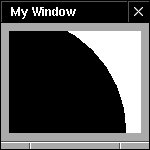

Copyright ª1996 by NeXT Software, Inc. All Rights Reserved.
NSView
Inherits From: NSResponder : NSObject
Conforms To: NSCoding (NSResponder)
NSObject (NSObject)
Declared In: AppKit/NSView.h
Purpose
NSView is an abstract class that defines the basic drawing, event-handling, and printing architecture of an OPENSTEP application. You typically don't interact with NSView API directly; rather, your custom view classes inherit from NSView and override many of its methods, which are invoked automatically by the Application Kit. If you're not creating a custom view class, there are few methods you need to use.
Principal Attributes
• Event handling • Integrated display to screen and printer
• Flexible coordinate systems • Icon dragging
Creation
Interface Builder
- initWithFrame: Designated initializer.
Commonly Used Methods
- frame Returns the NSView's location and size.
- bounds Returns the NSView's internal origin and size.
- setNeedsDisplay: Marks the NSView as needing to be redrawn.
- window Returns the NSWindow that contains the NSView.
- drawRect: Draws the NSView. (All subclasses must implement this method, but it's rarely invoked explicitly.)
Class Description
NSView is an abstract class that provides concrete subclasses with a structure for drawing, printing, and handling events. NSViews are arranged within an NSWindow, in a nested hierarchy of subviews. A view object claims a rectangular region of its enclosing superview, is responsible for all drawing within that region, and is eligible to receive mouse events occurring in it as well. In addition to these major responsibilities, NSView handles dragging of icons and works with the NSScrollView class to support efficient scrolling. The following sections explore these areas and more.
Most of NSView's functionality is either automatically invoked by the Application Kit, or is available in Interface Builder. Unless you're implementing a concrete subclass of NSView or working intimately with the content of the view hierarchy at run time, you don't need to know much about this class's interface. See “Commonly Used Methods” above for methods you might use regardless.
The View Hierarchy
To be displayed, an NSView must be placed in an NSWindow. All view objects within an NSWindow are arranged in a hierarchy that begins at the NSWindow's content view, with each NSView having a single superview and zero or more subviews (see the NSWindow class specification for more on the content view). An NSView's superview and all the NSViews above the superview are sometimes referred to as the NSView's ancestors. An NSView's subviews and all of their subviews on down are known as the NSView's descendants. Each NSView in the view hierarchy has its own area to draw in and its own coordinate system, expressed as a transformation of its superview's coordinate system. An NSView can scale, translate, or rotate its coordinates dynamically, and a subclass can declare its y axis flipped to allow drawing from top to bottom—useful for drawing text, for example.
Graphically, an NSView can be regarded as a framed canvas. The frame locates the NSView in its superview, defines its size, and clips drawing to its edges, while the canvas defines the NSView's own internal coordinate system and hosts the actual drawing. The frame can be moved around, resized, and rotated in the superview, so that the NSView's image moves with it. Similarly, the canvas can be shifted, stretched, and rotated, so that the drawn image moves within the frame. The frame maps onto a region of the canvas that defines the bounds of what can possibly be seen. An NSView therefore keeps track of its space using two rectangles, one for each perspective: The frame rectangle gives the exterior perspective and the bounds rectangle give the interior. The frame and bounds methods, respectively, return these rectangles. This figure shows the relation between the frame rectangle, on the left, and the bounds rectangle over the canvas, on the right:
Although the bounds rectangle indicates which portion of the NSView that's potentially visible through the frame, if the frame runs outside of the superview the image will be clipped even within the bounds rectangle. An NSView's visible rectangle reflects the portion of an NSView that actually displays, in terms of its own coordinate system (the darker gray rectangle in the figure below). It isn't often important to know what the visible rectangle is, since the display mechanism automatically limits drawing to visible portions of a view. If a subclass must perform expensive precalculation to build its image, though, it can use the visibleRect method to limit its work to what's actually needed.
The initWithFrame: method establishes an NSView's frame rectangle, but doesn't insert it into an NSWindow's view hierarchy. This is the job of the addSubview: method, which you send to the NSView that you want to contain the newly initialized one. The frame rectangle is then interpreted in terms of the superview, properly locating the new NSView both by its place in the view hierarchy and its location in the superview's NSWindow.
After initialization, you can move an NSView programmatically using any of the frame-setting methods: setFrame:, setFrameOrigin:, setFrameSize:, and setFrameRotation:. When you move an NSView all of its subviews move along with it. When you change the frame rectangle's size, the bounds rectangle is automatically resized to match (see figure below), and the subviews are automatically resized as described later under “Moving and Resizing NSViews.” setFrameRotation: rotates the NSView around the origin of the frame rectangle (which is typically the lower left corner).
A number of methods access the view hierarchy itself. superview returns the receiver's containing NSView, while subviews returns an NSArray containing its immediate descendant NSViews. The window method returns the NSWindow whose view hierarchy the receiver belongs to. You can add NSViews to and remove them from the view hierarchy using the methods addSubview:, removeFromSuperview, and replaceSubview:with:. An additional method, addSubview:positioned:relativeTo:, allows you to specify the ordering of NSViews that may overlap (though laying out NSViews so that they overlap isn't recommended). When an NSView is added as a subview of another, it automatically invokes the viewWillMoveToSuperview: and if necessary the viewWillMoveToWindow: methods. Concrete subclasses can override these methods, allowing an instance to query its new superview or NSWindow about relevant state and update itself accordingly. A few other methods allow you to inspect relationships among NSViews: isDescendantOf: confirms the containment of the receiver, ancestorSharedWithView: find the common container of two NSViews, and opaqueAncestor returns the closest containing NSView that's guaranteed to draw every pixel in the receiver's frame (possible the receiver itself).
Coordinate Conversion in the View Hierarchy
At various times, particularly when handling events, you need to convert a rectangle or point from the coordinate system of one NSView to another (typically a superview or subview). NSView defines six methods that convert rectangles, points, and sizes in either direction:
- convertPoint:fromView: - convertPoint:toView:
- convertSize:fromView: - convertSize:toView:
- convertRect:fromView: - convertRect:toView:
These methods convert geometric structures between the receiver's coordinate system and another NSView's within the same NSWindow, returning an alternate expression for the same on-screen location or area. Note that the structure in question needn't actually be located within the NSView's bounds rectangle; it's merely assumed to be expressed in that NSView's coordinate system. If the second argument to a conversion method is nil, the conversion is made between the receiver's coordinate system and the base coordinate system of its NSWindow.
For converting to and from the screen coordinate system, NSWindow defines the convertBaseToScreen: and convertScreenToBase: methods. Using the NSView conversion methods along with these allows you to convert a geometric structure between an NSView's coordinate system and the screen's with only two messages.
Conversion is straightforward when neither NSView is rotated, or when dealing only with points. When converting rectangles or sizes between NSViews with different rotations, the geometric structure must be altered in a reasonable way. In converting a rectangle NSView makes the assumption that you want to guarantee coverage of the original screen area. To this end, the converted rectangle is enlarged so that when located in the appropriate NSView it completely covers the original rectangle (the left side of the figure below, with 15 degrees of rotation). In converting a size NSView simply treats it as a vector from (0.0, 0.0) and maps it onto the destination coordinate system. Though the length remains the same, the balance along the two axes shifts according to the rotation (the right side of the figure below, rotated 45 degrees).
Drawing in an NSView
Drawing in an NSView is as simple as implementing the drawRect: method to generate the appropriate PostScript code for the image you want displayed—the display mechanism handles the rest of the work. On the other hand, it can be as complex as dealing with the PostScript language itself, the coordinate transformations from superview to subview, and the operation of the display mechanism. This section and the following, “The Display Mechanism,” progress from the basic to the esoteric, keeping the picture correct, if incomplete, at each stage.
In order for a concrete subclass of NSView to display any kind of image, it must implement the drawRect: method. This method is invoked during the display process to generate PostScript code that's rendered by the Window Server into a raster image. drawRect: takes a single argument, an NSRect describing the area that needs to be drawn in the receiver's own coordinate system. Here's an example:
- (void)drawRect:(NSRect)aRect
{
PSsetgray(NSWhite);
NSRectFill(aRect);
PSsetgray(NSBlack);
PSarc(0.0, 0.0, 117.0, 0.0, 360.0);
PSfill();
return;
}
This method first fills the view's background with white, then draws a black circle at the origin (0.0, 0.0). An NSView automatically clips drawing to its frame rectangle, so the results look like this:

Except for the background, this implementation of drawRect: ignores the rectangle provided, drawing everything each time it's invoked. This isn't a problem for a simple image, but for complex drawing it can be an extremely inefficient practice. Sending drawing instructions and data to the Window Server has a cost, and it's best to minimize that cost where possible. You can do this by testing whether a particular graphic shape intersects the rectangle being drawn, using NSIntersectsRect() and similar functions.
How to Draw
As indicated in the example above, drawing can be performed by invoking PostScript client library functions (also known as single-operator functions), which map directly to PostScript operators. The Application Kit provides a few higher-level mechanisms for handing PostScript instructions to the Window Server. The first is the pswrap program, which converts custom PostScript procedures into C functions that you can call in the same manner as client library functions. Wrapping complex drawing procedures minimizes the overhead of communication with the Window Server by passing a group of instructions in one interprocess message, as opposed to a number of such messages for repeated single-operator calls. The Application Kit itself defines some pswrap functions, such as NSRectFill(), and you can define your own.
Describing the PostScript language, client libraries, and pswrap is outside this scope of this class description. For more information, see:
PostScript Language Reference Manual, Second Edition. Adobe Systems Incorporated. Addison Wesley, 1990. ISBN 0-201-18127-4.
Descriptions of OPENSTEP PostScript operators and client functions, accessible from the Project Builder application in the Application Kit framework documentation.
For information on pswrap, contact Adobe Systems.
The second higher-level mechanism is provided by Application Kit classes that perform drawing within an NSView, such as NSImage and the various NSCell subclasses. These classes send PostScript instructions to the Window Server but don't have the overhead of maintaining a drawing context that NSView has. Objects that draw themselves are useful for encapsulating graphic elements that need to be drawn over and over, at different locations, or in slightly different ways. See the appropriate class specifications for more information on drawing with them.
Another way of drawing within an NSView is to add subviews that each do their own drawing. This is somewhat more heavyweight than using NSCells or NSImages, but the elements of such a constructed group have the full power of the NSView machinery at their disposal, including the autosizing of components and event handling, features described later in this class description.
Checking the Output Device
Most of an NSView's displayed image is a stable representation of its state, and is defined in the device-independent PostScript language. View objects also interact dynamically with the user, however, and this interaction often involves drawing that isn't integral to the image itself—selections and other highlighting, for example. Such drawing should be performed only to the computer screen, and never to a printer or fax device, or to the pasteboard (as when drawing an EPS image). You can predicate drawing on this difference of output device by sending the current DPS context an isDrawingToScreen message:
NSDPSContext *context = [NSDPSContext currentContext];
if (context && [context isDrawingToScreen]) {
/* Draw things that should only appear on a computer screen. */
}
Coordinate System Transformations
By default, an NSView's coordinate system is based at (0.0, 0.0) in the lower-left corner of its bounds rectangle, its units are the same size as those of its superview, and its axes are parallel to those of its frame rectangle. To change this coordinate system you can alter the NSView's bounds rectangle, thereby placing the canvas inside the frame rectangle, or transform it directly using PostScript operators in the drawRect: method. Changing the bounds rectangle sets up the basic coordinate system, with which all drawing performed by the NSView begins; concrete subclasses of NSView typically alter the bounds rectangle immediately as needed in their initWithFrame: methods (or other designated initializers). Direct transformations are useful for temporary effects, such as scaling one axis to draw an oval instead of a circle, then scaling it back before stroking the path to preserve line widths; rotating the axes to draw text at an angle; or repeatedly translating the origin to draw the same figure in several locations.
The basic method for changing the bounds rectangle is setBounds:, which both positions and stretches the canvas. The origin of the rectangle provided to setBounds: becomes the lower-left corner of the bounds rectangle, and the size of the rectangle is made to fit in the frame rectangle, effectively scaling the NSView's drawn image. In the figure below, the bounds rectangle from the previous example is moved and doubled in size; the result appears on the right:
You can also set the parts of the bounds rectangle independently, using setBoundsOrigin: and setBoundsSize:. An additional method, setBoundsRotation:, rotates the coordinate system around its origin within the bounds rectangle (not the origin of the bounds rectangle itself). It also enlarges the visible rectangle to account for the rotation, so that it's expressed in the rotated coordinates yet completely covers the visible portion of the frame rectangle. This adds regions that must be drawn, yet will never be displayed (the triangular areas in the figure below). For this reason, rotating the bounds rectangle is strongly discouraged. It's better to rotate the coordinate system by using PostScript operators in the drawRect: method rather than by rotating the bounds rectangle.
setBoundsOrigin:, setBoundsSize:, and setBoundsRotation: all express their transformations in absolute terms. Another set of methods transform the coordinate system in relative terms; if you invoke them repeatedly, their effects accumulate. These methods are translateOriginToPoint:, scaleUnitSquareToSize:, and rotateByAngle:. See the individual method descriptions for more information.
One final type of coordinate transformation is statically established by overriding the isFlipped method. NSView's implementation returns NO, which means that the origin of the coordinate system lies at the lower-left corner of the default bounds rectangle and the y axis runs from bottom to top. When a subclass overrides this method to return YES, the NSView machinery automatically adjusts itself to assume that the upper-left corner of the NSView holds the origin. In other words, when isFlipped returns YES the y axis runs from top to bottom. A flipped coordinate system affects all drawing in the NSView itself and reckons the frame rectangles of all immediate subviews from their upper-left corners, but it doesn't affect the coordinate systems of those subviews or the drawing performed by them.
A flipped coordinate system doesn't affect an NSView's subviews, but the other coordinate transformations do. Translation of the bounds rectangle from the coordinate system origin shifts all subviews along with the rest of the NSView's image. Scaling and rotation actually affect the drawing of the subviews, as their coordinate systems inherit and build on these alterations. You can determine whether an NSView's coordinate system is (or was ever) altered from the base coordinate system of its window using two methods. isRotatedFromBase returns YES if the receiver or any of its ancestors in the view hierarchy has ever been rotated, whether of the frame or of the bounds rectangle. isRotatedOrScaledFromBase similarly returns YES if the receiver or any of its ancestors has ever been rotated or been scaled from the base coordinate system's unit size. You can determine whether the NSView has never been rotated by checking that isRotatedOrScaledFromBase returns YES while isRotatedFromBase returns NO. Note that these methods only offer hints about the coordinate system. Their purpose is to help optimize certain operations, not to reflect the present state: Once an NSView is marked as having been rotated or scaled, it remains so marked for its lifetime.
To get the actual amount of rotation, use the frameRotation and boundsRotation methods. These return the rotation relative to the superview only, not to the base coordinate system, so if you want the latter amount you have to progress up through each superview to the NSWindow's content view, accumulating the rotation as you go. To get the scaling relative to the superview you can use convertSize:toView: and examine the ratio of the original size to that of the superview. To get the scaling relative to the base coordinate system, use nil as the second argument, which converts to the NSWindow's base coordinate system.
The Display Mechanism
Displaying an NSView centers around the drawRect: method, which transmits drawing instructions to the Window Server. Before this can happen, however, a number of other things must be established. First, of course, is the rectangle in the view that needs to be drawn. Once this is known, the view must be checked for opacity; if the view is partially transparent, its nearest opaque ancestor must be found and drawing must commence from there. Once all of this is determined and a particular view is to be drawn, the Window Server must know which window device the view is in, how to clip drawing to the appropriate region, and what coordinate system to use. This is all handled outside drawRect:, by NSView's various display methods. The following sections examine each of these points in turn.
Marking a View as Needing Display
The most common way of causing an NSView to redisplay is to tell it that its image is invalid. On each pass through the event loop, all views that need to redisplay do so. NSView defines two methods for marking a view's image as invalid; setNeedsDisplay:, which invalidates the view's entire bounds rectangle, and setNeedsDisplayInRect:, which invalidates a portion of the view. The automatic display of views is controlled by their window; you can turn this behavior off using NSWindow's setAutodisplay: method. You should rarely need to do this however; the autodisplay mechanism is well-suited to most kinds of update and redisplay.
The autodisplay mechanism invokes various methods that actually do the work of displaying. You can also use these methods to force a view to redisplay itself immediately when necessary. display and displayRect: are the counterparts to the methods mentioned above; both cause the receiver to redisplay itself regardless of whether it needs to or not. Two additional methods, displayIfNeeded and displayIfNeededInRect:, redisplay invalidated rectangles in the receiver if it's been marked invalid with the methods above. The rectangles that actually get drawn are guaranteed to be at least those marked as invalid, but the view may coalesce them into larger rectangles to save multiple invocations of drawRect:.
Opacity
NSViews don't necessarily cover every bit of their frames with drawing. Because of this, the display methods must be sure to find an opaque background behind the view that's ostensibly being drawn, and begin displaying from there forward. The display methods above all pull back up the view hierarchy to the first view that responds YES to an isOpaque message, bringing the invalidated rectangles along. NSView by default responds NO to isOpaque, so it's important to remember to override this method to return YES if appropriate when defining a subclass. Most Application Kit subclasses of NSView actually do this.
If you want to exclude background views from drawing when forcing display to occur unconditionally, you can use NSView methods that explicitly omit backing up to an opaque ancestor. These methods, parallel to those mentioned above, are displayRectIgnoringOpacity:, displayIfNeededIgnoringOpacity:, and displayIfNeededInRectIgnoringOpacity:.
Locking Focus
Before a display... method invokes drawRect:, it sets the Window Server up with information about the view, including the window device it draws in, the coordinate system and clipping path it uses, and other PostScript graphics state (discussed in detail below, under “PostScript Graphics State Objects”). The method used to do this is lockFocus, and it has a companion method that undoes its effects, called unlockFocus.
All drawing code invoked by an NSView must be bracketed by invocations of these methods to produce proper results. If you define some methods that need to draw in a view without going through the display methods above, for example, you must send lockFocus to the view that you're drawing in before sending commands to the Window Server, and unlockFocus as soon as your done.
It's perfectly reasonable to lock the PostScript focus on one view when another already has it. In fact, this is exactly what happens when subviews are drawn in their superview. The focusing machinery keeps a stack of which views have been focused, so that when one view is sent an unlockFocus message, the PostScript focus is restored to the view that was focused immediately before.
PostScript Graphics State Objects
When an NSView receives a lockFocus message, its basic drawing environment state is constructed and sent to the Window Server as a PostScript graphics state object, or gstate (this is a PostScript user object, not an Objective-C object). The basic state includes default values for parameters that don't change often, but leaves many other parameters undefined:
Parameter Default Value
coordinate transformation The NSView's coordinate system as established by the bounds rectangle
position No default value, must be set before drawing
path No default value
clipping path As established by lockFocus
font No default value, must be set before drawing text
line width 0.0
line cap 0 (a square butt end)
line join 0 (mitered joins)
halftone screen A device-dependent, type 3 halftone dictionary
halftone phase 0,0
flatness 1.0
miter limit 10
dash pattern A normal solid line
device The current window
stroke adjust true
color No guaranteed default value
color space No guaranteed default value, varies with color
color rendering Calibrated RGB rendering
overprint false
black generation No default value
transfer No default value
undercolor removal No default value
alpha (opacity) 1.0 (opaque)
instance drawing mode false
When drawing in an NSView, you must be sure to explicitly set relevant parameters that have no default value, or a PostScript error will result. Further, although drawing methods are free to set any gstate parameter, they should always restore the parameters to their original values when finished. This protects multiple drawing methods, and objects that draw within an NSView, such as NSImages and NSCells, from altering each other's graphics states. You can protect the gstate by bracketing the changes with PSgsave() and PSgrestore(), or by explicitly placing the parameter in question on the stack and resetting it later—for example, saving the line width only using PScurrentlinewidth(), performing your drawing, then calling PSsetlinewidth() to restore the prior value.
Normally the graphics state object is reconstructed from scratch each time the NSView is focused. You can instruct an NSView to keep a graphics state object indefinitely by sending it an allocateGState message (typically in the initialization method for a concrete subclass). This eliminates the overhead of continual reconstruction of the graphics state, and also allows you to omit commands for setting parameters from your drawing code. However, because a graphics state object does consume a fair amount of memory, you should be sure to test your application's performance with and without it. Persistent gstate objects are most suitable for NSViews that must be redrawn frequently with the same parameters.
When you set an NSView to use a persistent gstate object, it doesn't actually allocate one until it needs it. When it does create the graphics state object, the NSView invokes its setUpGState method to set the parameters. Your subclass can override this method to establish the parameters that you want kept in the graphics state using such methods and client library functions as NSColor's and NSFont's set, PSsetlinewidth(), PSsetdash(), and so on.
You can cause an NSView to discard its gstate object by sending it a releaseGState message, or simply to invalidate it using renewGState. The latter method causes the NSView to reestablish its gstate parameters by invoking setUpGState the next time it's needed. Finally, if for some reason you need to access the persistent gstate object directly, the gstate method returns its PostScript user object identifier.
Moving and Resizing NSViews
Repositioning an NSView is a potentially complex operation. Moving or resizing can expose portions of the NSView's superview that weren't previously visible, requiring the superview to redisplay. Resizing can also affect the layout of an NSView's subviews. Changes to an NSView's layout in any case may be of interest to other objects, which might need to be notified of the change. The following sections explore each of these areas.
Displaying After Moving or Resizing
None of the methods that alter an NSView's frame rectangle redisplays the NSView or marks it as needing display. When using the setFrame... methods, then, you must mark both the view being repositioned and its superview as needing display. This can be as simple as marking the superview in its entirety as needing display, or better, marking the superview in the old frame of the repositioned view and the view itself in its entirety. This code fragment sets theView's frame rectangle, and updates its superview appropriately:
NSView *theView; /* Assume this exists. */
NSRect newFrame; /* Assume this exists. */
[[theView superview] setNeedsDisplayInRect:[theView frame]];
[theView setFrame:newFrame];
[theView setNeedsDisplay:YES];
This sample marks the superview as needing display in the frame of the view about to be moved. Then, after theView is repositioned, it's marked as needing display in its entirety, which is nearly always the case.
Note: The setBounds... methods also don't redisplay the NSView, but because their changes don't affect superviews you can simply mark the repositioned NSView as needing display.
Autoresizing of Subviews
When an NSView's frame size changes, they layout of its subviews must often be adjusted to fit in the new size. NSView defines a mechanism that automates this process, allowing you to specify how any NSView should reposition itself when its superview is resized. Interface Builder allows you to set these attributes graphically with its Size Inspector, and in test mode you can examine the effects of autoresizing. You can also set autoresizing attributes programmatically using setAutoresizingMask: with a mask containing any of the constants illustrated below, combined using the C bitwise OR operator:
When one of these mask flags is omitted, the NSView's layout is fixed in that aspect; when it's included the NSView's layout is flexible in that aspect. For example, to keep an NSView in the lower left corner of its superview, you specify NSViewMaxXMargin | NSViewMaxYMargin. When more than one aspect along an axis is made flexible, the resize amount is distributed evenly among them.
Autoresizing is on by default, but you can turn it off using the setAutoresizesSubviews: method. Note that when you turn off an NSView's autoresizing, all of its descendants are likewise shielded from changes in the superview. Changes to subviews, however, can still percolate downward. Similarly, if a subview has no autoresize mask, it won't change in size, and therefore none of its subview will autoresize.
Autoresizing is accomplished using two methods. resizeSubviewsWithOldSize: is invoked automatically by an NSView whenever its frame size changes. This method then simply sends a resizeWithOldSuperviewSize: message to each subview. Each subview compares the old frame size to the new size and adjusts its position and size according to its autoresize mask. Subclasses of NSView can override either method to alter their autoresizing behavior.
Two cautions apply to autoresizing. First, it doesn't work at all in NSView that have been rotated. Subviews that have been rotated can autoresize within a nonaltered superview, but then their descendants aren't autoresized. Also, for autoresizing to work correctly, the subview being autoresized must lie completely within its superview's frame. Apart from these limitations, autoresizing covers most layout changes quite well.
Notifications
Beyond resizing its subviews, an NSView broadcasts notifications to interested observers any time its bounds and frame rectangles change. The notification names are NSViewFrameDidChangeNotification and NSBoundsDidChangeNotification, respectively. An NSView that bases its own display on the layout of its subviews, for example, can register itself as an observer for those subviews and update itself any time they're moved or resized. NSScrollView and NSClipView cooperate in this manner to adjust the NSScrollView's NSScroller's. You can turn notifications on and off using setPostsFrameChangedNotification: and setPostsBoundsChangedNofitications:.
Event Handling
NSViews are the most typical receivers of event and action messages, as described in the NSResponder and NSEvent class specifications. An NSView subclass can handle any event or action message simply by implementing it (being sure to invoke super's implementation as needed). Then, if an instance of that class is the first in the responder chain to respond to that message, it receives such messages as they're generated.
Except for an NSWindow's content view, an NSView's next responder is always its superview—most of the responder chain, in fact, comprises the NSViews from an NSWindow's first responder up to its content view. NSView addSubview: method automatically sets the receiver as the new subview's superview; you should never send setNextResponder: to an NSView object. You can safely add responders to the top end of an NSWindow's responder chain—the NSWindow itself if it has no delegate, or the delegate if it does.
As the class that handles display, NSView is the typical recipient of mouse and keyboard events. Mouse clicks, drags, and movements usually occur in some NSView or other, and most keystrokes represent text to be added for display at some point in a window. A mouse event starts at the lowest NSView containing it in the view hierarchy (or, the topmost NSView displayed under the cursor), and proceeds up the responder chain through superviews until some object handles it. “Mouse Events,” below, covers the details of handling mouse events. Most keyboard events start at the first responder, whatever it might be, and are similarly offered up the responder chain. Some actually change the first responder, thus allowing the user to perform many actions without using the mouse. See the NSResponder class specification for information on keyboard events. Tracking-rectangle events are monitored by the NSWindow and dispatched directly to the object that owns the tracking rectangle. “Tracking Rectangles and Cursor Rectangles” describes how to set up and handle these. An additional section covers the use of context-sensitive pop-up menus by your views.
Mouse Events
An NSView can receive mouse events of three general types: clicks, drags, and movements. A custom subclass of NSView can interpret a mouse event as a cue to perform a certain action, such as sending a target-action message, selecting a graphic element, and so on. NSViews automatically receive mouse-clicked and mouse-dragged events, but because mouse-moved events occur so often and can bog down the event queue, an NSView must explicitly request its NSWindow to watch for them using NSWindow's setAcceptsMouseMovedEvents: method. Tracking rectangles, described below, are a less expensive way of following the mouse's location.
The NSView selected to receive a mouse event is determined by the NSWindow using NSView's hitTest: method, which returns the lowest descendant that contains the cursor location of the event (this is also the topmost NSView displayed). Once the recipient is determined, the NSWindow sends it a mouseDown: message, which includes an NSEvent object containing information about the click. NSEvent's locationInWindow locates the cursor's hot spot in the coordinate system of the receiver's NSWindow. To convert it to the NSView's coordinate system, use convertPoint:fromView: with a nil NSView argument. From here, you can use mouse:inRect: to determine whether the click occurred in an interesting area.
One of the earliest things to consider in handling mouse-down events is whether the receiving NSView should become the first responder, which means that it will be the first candidate for subsequent key events and action messages. NSViews that handle graphic elements that the user can select—drawing shapes or text, for example—should typically accept first responder status on a mouse-down event, by overriding the acceptsFirstResponder method to return YES. This results in the window making the receiving NSView first responder with NSWindow's makeFirstResponder: method. Some NSViews, however, may not wish to change the selection upon the first mouse click in a non-key window, which should normally only order the window to the front. NSView's acceptsFirstMouse: method controls whether an initial mouse click is sent to the NSView or not. By default it returns NO, which in most cases is appropriate behavior. Certain subclasses, such as controls that don't affect the selection, override this method to return YES.
Once an NSView has accepted a mouse event and determined its location, it can also check which mouse button was clicked and how many times. NSEvent's type method distinguishes between left and right mouse events, and the NSView can base its behavior on this information. Right mouse events are defined by the Application Kit to open pop-up menus, but you can override this behavior if necessary. NSEvent's clickCount method returns a number identifying the mouse event as a single-, double-, or triple-click (and so on).
NSViews that handle mouse clicks as a single event, from mouse down, through dragging, to mouse up, must usually short-circuit the application's normal event loop, entering a modal event loop to catch and process only events of interest. For example, an NSButton highlights upon a mouse-down event, then follows the mouse location during dragging, highlighting when the mouse is inside and unhighlighting when the mouse is outside. If the mouse is inside on the mouse-up event, the NSButton sends its action message. This method template shows one possible kind of modal event loop:
- (void)mouseDown:(NSEvent *)theEvent
{
BOOL keepOn = YES;
BOOL isInside = YES;
NSPoint mouseLoc;
do {
mouseLoc = [self convertPoint:[theEvent mouseLocationInWindow
fromView:nil]];
isInside = [self mouse:mouseLoc inRect:[self bounds]];
switch ([theEvent type]) {
case NSLeftMouseDragged:
[self highlight:isInside];
break;
case NSLeftMouseUp:
if (isInside) [self doSomethingSignificant];
[self highlight:NO];
keepOn = NO;
break;
default:
/* Ignore any other kind of event. */
break;
}
theEvent = [[self window] nextEventMatchingMask: NSLeftMouseUpMask |
NSLeftMouseDraggedMask];
} while (keepOn);
return;
}
This loop converts the mouse location and checks whether it's inside the receiver. It highlights itself using the fictional highlight: method according to this, and on a mouse up inside, invokes doSomethingSignificant to perform an important action. Instead of merely highlighting, a custom NSView might move a selected object, draw a graphic image according to the mouse's location, and so on.
This kind of modal event loop is driven only as long as the user actually moves the mouse. It won't work, for example, to cause continual scrolling if the user presses the mouse button but never moves the mouse itself. For this, your modal loop should start a periodic event stream using NSEvent's class method startPeriodicEventsAfterDelay:withPeriod:, and add NSPeriodicMask to the mask passed to nextEventMatchingMask:. In the switch() statement the NSView can then check for a case of NSPeriodic and take whatever action it needs to; scrolling a document view or moving a step in an animation, for example. If you need to check the mouse location during a periodic event, you can use NSWindow's mouseLocationOutsideOfEventStream method.
Tracking Rectangles and Cursor Rectangles
One special type of event is that for tracking mouse movement into and out of a region in the NSView. Such a region is known as a tracking rectangle; it triggers mouse-entered events when the cursor enters it and mouse-exited events when the cursor leaves it. This can be useful for displaying context-sensitive messages or highlighting graphic elements under the cursor, for example. An NSView can have any number of tracking rectangles, which can overlap or be nested one within the other; the NSEvent objects generated for tracking events include a tag that identified the rectangle that triggered the event.
To create a tracking rectangle, use the addTrackingRect:owner:userData:assumeInside: method. This method registers an owner for the tracking rectangle provided, so that the owner receives the event messages. This is typically the NSView itself, but need not be. The method returns the tracking rectangle's tag so that you can store it for later reference in the event handling methods, mouseEntered: and mouseExited:. To remove a tracking rectangle, use the removeTrackingRect: method, which takes as an argument the tag of the tracking rectangle to remove.
Tracking rectangles, though created and used by NSViews, are actually maintained by NSWindows. Because of this, a tracking rectangle is a static entity; it doesn't move or change its size when the NSView does. If you use tracking rectangles, you should be sure to remove and reestablish them any time you change the frame rectangle of the NSView that contains them. If you're using a custom subclass of NSView, you can override the frame- and bounds-setting methods to do this. You can also register an observer for the NSViewFrameDidChangeNotification (described below), and have it reestablish the tracking rectangles on receiving the notification.
One common use of tracking rectangles is to change the cursor image over different types of graphic elements. Text, for example, typically requires an I-beam cursor. Changing the cursor is such a common operation that NSView defines several convenience methods to ease the process. A tracking rectangle generated by these methods is called a cursor rectangle. The Application Kit itself assumes ownership of cursor rectangles, so that when the user moves the mouse over the rectangle the cursor automatically changes to the appropriate image. Unlike general tracking rectangles, cursor rectangles may not partially overlap. They may, however, be completely nested, one within the other.
Because cursor rectangles need to be reset often as the NSView's size and graphic elements change, NSView defines a single method, resetCursorRects, that's invoked any time its cursor rectangles need to be reestablished. A concrete subclass overrides this method, invoking addCursorRect:cursor: for each cursor rectangle it wishes to set. Thereafter, the NSView's cursor rectangles can be rebuilt by invoking NSWindow's invalidateCursorRectsForView: method. If you find you need to temporarily remove a single cursor rectangle, you can do this with removeCursorRect:cursor:. Be aware that resetCursorRects will reestablish that rectangle, unless you implement it to do otherwise.
An NSView's cursor rectangles are automatically reset whenever:
• Its frame or bounds rectangle changes, whether by a setFrame... or setBounds... message or by autoresizing.
• Its NSWindow is resized. In this case all of the NSWindow's view objects get their cursor rectangles reset.
• It's moved in the view hierarchy.
• It's scrolled in an NSScrollView or NSClipView.
You can temporarily disable all the cursor rectangles in a window using NSWindow's disableCursorRects and enableCursorRects methods. NSWindow's areCursorRectsEnabled tells you whether they're currently enabled.
Context-Sensitive Menus
On Microsoft Windows, any view can be assigned a pop-up menu that's displayed when the user clicks the right mouse button over the view. setMenu: assigns an NSMenu to a view, and menu returns it. Your subclass can define a menu that's used for all instances by implementing the defaultMenu class method. It can also change the menu displayed based on the mouse event by overriding the menuForEvent: instance method. This allows the view clicked to display different menus based on the location of the mouse and of the view's state, or to change or enable individual menu items based on the commands available for the view or for that region of the view. See the NSMenu and NSMenuItem class and protocol specifications for more information on using menus.
Printing and Faxing
Printing or faxing an NSView uses the same PostScript description as for displaying on the screen, by simply changing the device. An NSView can check whether it's drawing to the screen in order to conditionally include or omit elements such as highlighting, but normally doesn't need to be involved with the PostScript generation process in a special way for printing. It may, however, need to take part in peripheral issues, including how it's divided into pages and placed on them, and generation of document structuring comments used by some PostScript document programs. The sections below cover these areas.
To print or fax an NSView, send it a print: or fax: message. You can also generate an EPS representation using either dataWithEPSInsideRect: or writeEPSInsideRect:toPasteboard:. For any of these jobs, the NSView creates an NSPrintOperation object that manages the process of generating proper PostScript code for a printer or fax device. NSPageLayout, NSPrintInfo, and NSPrintPanel objects are also involved in the process. See those classes' specifications for more information on the printing process itself.
Pagination
When an NSView is printed onto pages smaller than itself, it tiles itself out onto separate logical pages so that its entire visible region is printed. A subclass of NSView can alter the way pagination is performed by overriding two small sets of methods. The first set affects automatic pagination; the second replaces automatic pagination completely. One extra method allows the NSView to adjust the location of the printed image on the page. Finally, after pagination has actually been performed, the NSView is given the chance to draw additional marks on the page.
NSView's automatic pagination tries to fit as much of the view being printed onto a logical page, slicing the view into the largest possible chunks. This is sufficient for many views, but if a view's image must be divided only at certain places—between lines of text or cells in a table, for example, the view can adjust the automatic mechanism to accommodate this by reducing the height or width of each page. It does so by overriding up to four methods. adjustPageHeightNew:top:bottom:limit: provides an out parameter for the new bottom coordinate of the page, followed by the proposed top and bottom. An additional parameter limits the height of the page; the bottom can't be moved above it. adjustPageWidthNew:left:right:limit: works in the same way to allow the view to adjust the width of a page. The limits are calculated as a percentage of the proposed page's height or width. Your view subclass can also customize this percentage by overriding the methods heightAdjustLimit and widthAdjustLimit to return the reducible fraction of the page.
More complex views, such as those that display separate pages over a background, need to direct their own pagination. An NSView subclass that needs to do so overrides the knowsPagesFirst:last: method to return YES, which signals that it will be calculating each page's dimensions, and returns by reference its first and last page numbers. The pagination machinery then uses these numbers, sending rectForPage: to the NSView, which uses the page number and the current printing information to calculate an appropriate rectangle in its coordinate system. The adjustPage... methods aren't used in this case.
The last stage of pagination involves placing the image to be printed on the logical page. NSView's locationOfPrintRect: places it according to the NSPrintInfo's status. By default it places the image in the upper left corner of the page, but if NSPrintInfo's isHorizontallyCentered or isVerticallyCentered methods return YES, it centers a single-page image along the appropriate axis. A multiple-page document, however, is always placed so that the divided pieces can be assembled at their edges.
After the NSView has sliced out a rectangle and positioned it on a page, it's given two chances to add extra marks to the page, such as crop marks or fold lines. drawPageBorderWithSize: is used for logical pages, and is invoked for each paginated portion of the view. drawSheetBorderWithSize: is used for actual physical pages, or sheets, on which one or more logical pages may be laid out. In a 2-up printing, for example, the former method is invoked twice for each sheet, while the latter is invoked once for each sheet.
PostScript Document Structure
As an adjunct to the PostScript language itself, Adobe has defined a set of document structuring conventions that describe the internal structure of a given PostScript language document. NSView properly generates the basic information needed to structure its output, and defines a number of methods that subclasses can override to provide additional information. This section only describes the methods that relate to the structure of a conforming PostScript language document; see the individual method descriptions and Adobe's PostScript Language Reference Manual, Appendix G for more information.
An NSView subclass can override any of the methods that write out document structuring comments and definitions. When overriding begin... or add... methods, be sure to invoke super's implementation before writing additional information; when overriding end... methods, invoke super's implementation last. This sample method, for example, adds a comment to the header of a document:
- (void)endHeaderComments
{
NSDPSContext *context = [NSDPSContext currentContext];
[context printFormat:@"%%%%SomeComment: %d\n", someNumber];
[super endHeaderComments];
return;
}
The initial portion of a conforming PostScript language document is called the prologue, and contains two parts itself: the header and a set of procedure definitions. NSView's beginPrologueBBox:... writes out the very beginning of the document. endHeaderComments closes the first part of the prologue. Subclasses can add their own procedure definitions to the end of the prologue by overriding endPrologue.
After the prologue comes the script, which contains a section that applies to the entire document, followed by sections for each page, and finally the document trailer. beginSetup and endSetup write the document setup section. Each page is written with five methods, in addition to drawRect:. beginPage:label:bBox:fonts: writes out the beginning of each page's document structuring comments. It's followed by beginPageSetupRect:placement:, which starts the page setup section. An additional method, addToPageSetup, does nothing by default, but allows subclasses to append extra procedure definitions and comments to the page setup. The page setup concludes with an endPageSetup message. After all this, endPage wraps up the page description; subclasses can override this method to add document structuring comments and PostScript code to the page trailer. The document trailer is written by the beginTrailer and endTrailer methods.
Communicating with the Window Server During Printing
While an NSView is printing, its connection to the Window Server is replaced by a connection to the print job output. Sometimes the NSView needs to communicate briefly with the Window Server while printing; for example, it may need to read some data stored only on the Window Server, or open an attention panel to alert the user of a problem. In these cases, it can temporarily swap in the NSApplication object's DPS context to restore access to the application's Window Server state and to the screen. When finished, the view object restores the print operation's context to continue generating its image:
[NSDPSContext setCurrentContext:[NSApp context]];
/* Communicate with the Window Server. */
[NSDPSContext setCurrentContext:[[NSPrintOperation currentOperation] context]];
/* Resume generating PostScript code. */
Other Features
Besides the fundamentals of drawing and event handling, NSView includes several auxiliary features. These are tagging NSViews for quick location, support for dragging of images and file icons, and cooperation with the scrolling machinery to facilitate viewing larger NSViews through smaller ones. The following sections introduce each of these features and name the methods and cooperating classes or protocols involved in each.
Tags
NSView defines methods that allow you to tag individual view objects with integer tags and to search the view hierarchy based on those tags. NSView's tag method always returns -1. You can override this in subclasses to return a special value, or even add a setTag: method to allow the tag to be changed at run time (several Application Kit classes, especially NSControl and NSCell, do just this). The viewWithTag: method proceeds through all of the receiver's descendants (including itself), searching for a subview with the given tag and returning it if it's found.
Dragging
A view object can act as either the source or destination for dragged images and file icons. The basic dragging methods, dragImage:... and dragFile:... methods, handle the mechanics of moving the image on the screen and notifying the destination of the dragging operations. To act as a source for dragging operations, a concrete subclass of NSView can adopt the NSDraggingSource protocol, by which the source indicates what kinds of dragging operations are allowed and is notified of dragging operations as they begin. Both NSView and NSWindow subclasses can act as destinations for dragging operations, by adopting the NSDraggingDestination protocol and making use of the NSDraggingInfo protocol. For more information see the dragging protocol specifications and the descriptions of dragImage:... and dragFile:... in this specification.
Scrolling
NSView defines a number of methods to support scrolling, whereby the NSView being scrolled—the document view—is displayed partially through another—the content or clip view (not to be confused with a window's content view). Scrolling is effected by moving the clip view's bounds rectangle, which reveals the different regions of the document view. Most of the scrolling methods assume that the NSView is enclosed within an NSClipView and an NSScrollView, which handle the mechanics of scrolling for you. You can, however, reproduce the effects of scrolling yourself if you wish. See the NSScrollView, NSClipView, and NSScroller class specifications for information on how scrolling is implemented by the Application Kit.
NSView's most direct scrolling methods are scrollPoint: and scrollRectToVisible:, both of which assume that the receiver is embedded in an NSClipView. These methods move the clip view so that the requested point or rectangle in the receiver become visible. Another method, autoscroll:, automatically scrolls the receiver in an NSClipView based on the location of the mouse. It's useful for moving the document view when the user drags an icon outside of the visible area. The enclosingScrollView method returns the NSScrollView that contains the NSView, allowing you to tune the way scrolling occurs.
Two other methods aid in scrolling. A subclass of NSView can override adjustScroll: to change the way automatic (user-driven) scrolling occurs. It can quantize scrolling into regular units, to the edges of a spreadsheet's cells, for example, or simply limit scrolling to a specific region of the NSView. The last scrolling method, scrollRect:by:, copies an already-drawn portion of the NSView to a new location. It's useful for producing temporary effects, but note that any subsequent drawing will obliterate the copied portion.
Method Types
Creating instances - initWithFrame:
Managing the view hierarchy - superview
- subviews
- window
- addSubview:
- addSubview:positioned:relativeTo:
- removeFromSuperview
- replaceSubview:with:
- isDescendantOf:
- opaqueAncestor
- ancestorSharedWithView:
- sortSubviewsUsingFunction:context:
- viewWillMoveToSuperview:
- viewWillMoveToWindow:
Searching by tag - viewWithTag:
- tag
Modifying the frame rectangle - setFrame:
- frame
- setFrameOrigin:
- setFrameSize:
- setFrameRotation:
- frameRotation
Modifying the bounds rectangle - setBounds:
- bounds
- setBoundsOrigin:
- setBoundsSize:
- setBoundsRotation:
- boundsRotation
Modifying the coordinate system - translateOriginToPoint:
- scaleUnitSquareToSize:
- rotateByAngle:
Examining coordinate system modifications
- isFlipped
- isRotatedFromBase
- isRotatedOrScaledFromBase
Converting coordinates - convertPoint:fromView:
- convertPoint:toView:
- convertSize:fromView:
- convertSize:toView:
- convertRect:fromView:
- convertRect:toView:
- centerScanRect:
Controlling notifications - setPostsFrameChangedNotifications:
- postsFrameChangedNotifications
- setPostsBoundsChangedNotifications:
- postsBoundsChangedNotifications
Resizing subviews - resizeSubviewsWithOldSize:
- resizeWithOldSuperviewSize:
- setAutoresizesSubviews:
- autoresizesSubviews
- setAutoresizingMask:
- autoresizingMask
Focusing - lockFocus
- unlockFocus
+ focusView
Displaying - setNeedsDisplay:
- setNeedsDisplayInRect:
- needsDisplay
- display
- displayRect:
- displayRectIgnoringOpacity:
- displayIfNeeded
- displayIfNeededInRect:
- displayIfNeededIgnoringOpacity
- displayIfNeededInRectIgnoringOpacity:
- isOpaque
Drawing - drawRect:
- visibleRect
- canDraw
- shouldDrawColor
Managing a graphics state - allocateGState
- gState
- setUpGState
- renewGState
- releaseGState
Event handling - acceptsFirstMouse:
- hitTest:
- mouse:inRect:
- performKeyEquivalent:
- performMnemonic:
Dragging operations - dragImage:at:offset:event:pasteboard:source:slideBack:
- dragFile:fromRect:slideBack:event:
- registerForDraggedTypes:
- unregisterDraggedTypes
- shouldDelayWindowOrderingForEvent:
Managing cursor rectangles - addCursorRect:cursor:
- removeCursorRect:cursor:
- discardCursorRects
- resetCursorRects
Managing tracking rectangles - addTrackingRect:owner:userData:assumeInside:
- removeTrackingRect:
Scrolling - scrollPoint:
- scrollRectToVisible:
- autoscroll:
- adjustScroll:
- scrollRect:by:
- enclosingScrollView
Context-sensitive menus - menuForEvent:
+ defaultMenu
Managing the key view loop - setNextKeyView:
- nextKeyView
- nextValidKeyView
- previousKeyView
- previousValidKeyView
Printing and faxing - print:
- fax:
- dataWithEPSInsideRect:
- writeEPSInsideRect:toPasteboard:
Pagination - heightAdjustLimit
- widthAdjustLimit
- adjustPageWidthNew:left:right:limit:
- adjustPageHeightNew:top:bottom:limit:
- knowsPagesFirst:last:
- rectForPage:
- locationOfPrintRect:
Adorning pages in printout - drawPageBorderWithSize:
- drawSheetBorderWithSize:
Writing conforming PostScript - beginPrologueBBox:creationDate:createdBy:fonts:
forWhom:pages:title:
- endHeaderComments
- endPrologue
- beginSetup
- endSetup
- beginPage:label:bBox:fonts:
- beginPageSetupRect:placement:
- addToPageSetup
- endPageSetup
- endPage
- beginTrailer
- endTrailer
Class Methods
p defaultMenu
+ (NSMenu *)defaultMenu
Overridden by subclasses to return the default pop-up menu for instances of the receiving class. NSView's implementation returns nil. This menu is used only on Microsoft Windows.
See also: - menuForEvent:, - menu(NSResponder)
focusView
+ (NSView *)focusView
Returns the currently focused NSView object, or nil if there is none.
See also: - lockFocus, - unlockFocus
Instance Methods
acceptsFirstMouse:
- (BOOL)acceptsFirstMouse:(NSEvent *)theEvent
Overridden by subclasses to return YES if the receiver should be sent a mouseDown: message for theEvent, an initial mouse-down event over the receiver in its window, NO if not. The receiver can either return a value unconditionally, or use theEvent's location to determine whether or not it wants the event. NSView's implementation ignores theEvent and returns NO.
Override this method in a subclass to allow instances to respond to initial mouse-down events. For example, most view objects refuse an initial mouse-down event, so that the event simply activates the window. Many control objects, however, such as NSButton and NSSlider, do accept them, so that the user can immediately manipulate the control without having to release the mouse button.
See also: - hitTest:
addCursorRect:cursor:
- (void)addCursorRect:(NSRect)aRect cursor:(NSCursor *)aCursor
Establishes aCursor as the cursor to be used when the mouse pointer lies within aRect.
Note: Cursor rectangles aren't subject to clipping by superviews, nor are they intended for use with rotated NSViews. You should explicitly confine a cursor rectangle to the NSView's visible rectangle to prevent improper behavior.
This method is intended to be invoked only by the resetCursorRects method. If invoked in any other way, the resulting cursor rectangle will be discarded the next time the NSView's cursor rectangles are rebuilt.
See also: - removeCursorRect:cursor:, - discardCursorRects, - resetCursorRects, - visibleRectangle
addSubview:
- (void)addSubview:(NSView *)aView
Adds aView to the receiver's subviews so that it's displayed above its siblings. Also sets the receiver as aView's next responder.
See also: - addSubview:positioned:relativeTo:, - subviews, - removeFromSuperview, - setNextResponder: (NSResponder)
addSubview:positioned:relativeTo:
- (void)addSubview:(NSView *)aView
positioned:(NSWindowOrderingMode)place
relativeTo:(NSView *)otherView
Inserts aView among the receiver's subviews so that it's displayed immediately above or below otherView according to whether place is NSWindowAbove or NSWindowBelow. If otherView is nil (or isn't a subview of the receiver), aView is added above or below all of its new siblings. Also sets the receiver as aView's next responder.
See also: - addSubview:, - subviews, removeFromSuperView, - setNextResponder: (NSResponder)
addToPageSetup
- (void)addToPageSetup
Implemented by subclasses that perform their own pagination to add a scaling operator to the PostScript code generated when printing. This method is invoked by print: and fax:. NSView's implementation of this method does nothing.
See the NSPrintInfo class specification for information on retrieving document scaling during printing.
See also: - beginPageSetupRect:placement:
addTrackingRect:owner:userData:assumeInside:
- (NSTrackingRectTag)addTrackingRect:(NSRect)aRect
owner:(id)anObject
userData:(void *)userData
assumeInside:(BOOL)flag
Establishes aRect as an area for tracking mouse-entered and mouse-exited events within the receiver, and returns an tag that identifies the tracking rectangle in NSEvent objects and that can be used to remove the tracking rectangle. anObject is the object that gets sent the event messages. It can be the receiver itself or some other object (such as an NSCursor or a custom drawing tool object), as long as it responds to both mouseEntered: and mouseExited:. userData is supplied in the NSEvent object for each tracking event. flag determines which event is sent first by indicating where the mouse is assumed to be at the time this method is invoked. If flag is YES, the first event will be generated when the mouse leaves aRect; if flag is NO the first event will be generated when the mouse enters it.
Tracking rectangles provide a general mechanism that can be used to trigger actions based on the mouse location (for example, a status bar or hint field that provides information on the item the cursor lies over). To simply change the cursor over a particular area, use addCursorRect:cursor:. If you must use tracking rectangles to change the cursor, the NSCursor class specification describes the additional methods that must be invoked to change cursors by using tracking rectangles.
See also: - removeTrackingRect:, - userData (NSEvent)
adjustPageHeightNew:top:bottom:limit:
- (void)adjustPageHeightNew:(float *)newBottom
top:(float)top
bottom:(float)proposedBottom
limit:(float)bottomLimit
Overridden by subclasses to adjust page height during automatic pagination. This method is invoked by print: and fax: with top and proposedBottom set to the top and bottom edges of the pending page rectangle in the receiver's coordinate system. The receiver can raise the bottom edge and return the new value in newBottom, allowing it to prevent items such as lines of text from being divided across pages. bottomLimit is the topmost value that newBottom can be set to, as calculated using the return value of heightAdjustLimit. If this limit is exceeded, the pagination mechanism simply uses bottomLimit for the bottom edge.
NSView's implementation of this method propagates the message to its subviews, allowing nested views to adjust page height for their drawing as well. An NSButton or other small view, for example, will nudge the bottom edge up if necessary to prevent itself from being cut in two (thereby pushing it onto an adjacent page). Subclasses should invoke super's implementation, if desired, after first making their own adjustments.
See also: - adjustPageWidthNew:left:right:limit:
adjustPageWidthNew:left:right:limit:
- (void)adjustPageWidthNew:(float *)newRight
left:(float)left
right:(float)proposedRight
limit:(float)rightLimit
Overridden by subclasses to adjust page width during automatic pagination. This method is invoked by print: and fax: with left and proposedRight set to the side edges of the pending page rectangle in the receiver's coordinate system. The receiver can pull in the right edge and return the new value in newRight, allowing it to prevent items such as small images or text columns from being divided across pages. rightLimit is the leftmost value that newRight can be set to, as calculated using the return value of widthAdjustLimit. If this limit is exceeded, the pagination mechanism simply uses rightLimit for the right edge.
NSView's implementation of this method propagates the message to its subviews, allowing nested views to adjust page width for their drawing as well. An NSButton or other small view, for example, will nudge the bottom edge up if necessary to prevent itself from being cut in two (thereby pushing it onto an adjacent page). Subclasses should invoke super's implementation, if desired, after first making their own adjustments.
See also: - adjustPageHeightNew:top:bottom:limit:
adjustScroll:
- (NSRect)adjustScroll:(NSRect)proposedVisibleRect
Overridden by subclasses to modify proposedVisibleRect, returning the altered rectangle. NSClipView invokes this method to allow its document view to adjust its position during scrolling. For example, a custom view object that displays a table of data can adjust the origin of proposedVisibleRect so that rows or columns aren't cut off by the edge of the enclosing NSClipView. NSView's implementation simply returns proposedVisibleRect.
Note: NSClipView only invokes this method during automatic or user-controlled scrolling. Its scrollToPoint: method doesn't invoke this method, so you can still force a scroll to an arbitrary point.
allocateGState
- (void)allocateGState
Causes the receiver to maintain a private PostScript graphics state object, which encapsulates all parameters of the graphics environment. The receiver builds the graphics state parameters using setUpGState, then automatically establishes this graphics state each time the PostScript focus is locked on it. A graphics state may improve performance for view objects that are focused often and need to set many parameters, but use of standard PostScript operators is normally efficient enough.
Because graphics states occupy a fair amount of memory, they can actually degrade performance. Be sure to test application performance with and without the private graphics state before committing to its use.
See also: - setUpGState, - gstate, - renewGState, - releaseGState
ancestorSharedWithView:
- (NSView *)ancestorSharedWithView:(NSView *)aView
Returns the closest ancestor shared by the receiver and aView, or nil if there's no such object. Returns self if aView is identical to the receiver.
See also: - isDescendantOf:
autoresizesSubviews
- (BOOL)autoresizesSubviews
Returns YES if the receiver automatically resizes its subviews using resizeSubviewsWithOldSize: whenever its frame size changes, NO otherwise.
See also: - setAutoresizesSubviews:
autoresizingMask
- (unsigned int)autoresizingMask
Returns the receiver's autoresizing mask, which determines how it's resized by the resizeWithOldSuperviewSize: method. The autoresizing mask values are listed under the setAutoresizingMask: method description. If the autoresizing mask is equal to NSViewNotSizable (that is, if none of the options are set), then the receiver doesn't resize at all in resizeWithOldSuperviewSize:.
autoscroll:
- (BOOL)autoscroll:(NSEvent *)theEvent
Scrolls the receiver's closest ancestor NSClipView proportionally to theEvent's distance outside of it. theEvent's location should be expressed in the window's base coordinate system (which it normally is), not the receiving view object's. Returns YES if any scrolling is performed; otherwise returns NO.
View objects that track mouse-dragged events can use this method to scroll automatically when the mouse is dragged outside of the NSClipView. Repeated invocations of this method (with an appropriate delay) result in continual scrolling, even when the mouse doesn't move.
See also: - autoscroll: (NSClipView), - scrollPoint:, - isDescendantOf:
beginPage:label:bBox:fonts:
- (void)beginPage:(int)ordinalNum
label:(NSString *)aString
bBox:(NSRect)pageRect
fonts:(NSString *)fontNames
Writes a conforming PostScript page separator. This method is invoked by print: and fax:.
ordinalNum is the page's position in the document's page sequence (from 1 through n for an n-page document).
aString is a string that contains no white space characters. It identifies the page according to the document's internal numbering scheme. If aString is empty (@“”), the text equivalent of ordinalNum is used.
pageRect is the rectangle enclosing all the drawing on the page about to be printed, in the default PostScript coordinate system of the page (not of the receiving NSView). If pageRect is an empty rectangle (width and height of zero), “(atend)” is output instead of a description of the bounding box, and the bounding box is output at the end of the page.
fontNames is a string containing the names of the fonts used in the page, each pair separated by a space. If the fonts used are unknown before the page is printed, fontNames can be empty. In this case “(atend)” is output instead of the font names, which are listed automatically at the end of the page description.
See also: - endPage, NSIsEmptyRect() (Foundation Kit)
beginPageSetupRect:placement:
- (void)beginPageSetupRect:(NSRect)aRect placement:(NSPoint)location
Writes the page setup section for a page, generating the initial coordinate transformation for printing the region defined by aRect in the receiver's coordinate system. location is the offset in page coordinates of the rectangle on the physical page.
This method is invoked by print: and fax: after the starting comments for the page have been written. It generates a PostScript save operation and invokes lockFocus, which are balanced in the endPage method with an unlockFocus and a PostScript restore operation.
See also: - addToPageSetup
beginPrologueBBox:creationDate:createdBy:fonts:forWhom:pages:title:
- (void)beginPrologueBBox:(NSRect)boundingBox
creationDate:(NSString *)dateCreated
createdBy:(NSString *)anApplication
fonts:(NSString *)fontNames
forWhom:(NSString *)user
pages:(int)numPages
title:(NSString *)aTitle
Invoked by print: and fax: to write the start of a conforming PostScript header.
boundingBox is the bounding box of the document, expressed in the default PostScript coordinate system on the page. The document bounding box is the union of the bounding boxes of every page in the document. If it's unknown, boundingBox should be empty (width and height of zero). In this case “(atend)” is output instead of the bounding box, which is accumulated as pages are printed and written in the trailer.
dateCreated is a text string containing a human readable date. If dateCreated is empty (@“”) the current date is used.
anApplication is a string containing the name of the document creator. If anApplication is empty then the string returned by NSProcessInfo's processName instance method is used.
fontNames is a string holding the names of the fonts used in the document, each pair separated by a space. If the fonts used are unknown before the document is printed, fontNames should be empty. In this case “(atend)” is output instead of the font names, and the name of each NSFont used by the view is written in the trailer.
user is a string containing the name of the person the document is being printed for. If user is empty the login name of the current user is substituted.
numPages specifies the number of pages in the document. If unknown at the beginning of printing, numPages should have a value of -1. In this case “(atend)” is output instead of a page count, the pages are counted as they are generated, and the resulting count is written in the trailer.
aTitle is a string specifying the title of the document. If aTitle is empty, then the title of the receiver's window is used. If the window has no title, “Untitled” is output.
See also: - beginTrailer, - endTrailier, - set (NSFont), + useFont: (NSFont)
beginSetup
- (void)beginSetup
Writes the beginning of the document setup section, which begins with a %%BeginSetup comment and includes a %%PaperSize comment declaring the type of paper being used. This method is invoked by print: and fax: at the start of the setup section of the document, which occurs after the prologue of the document has been written, but before any pages are written. This section of the output is intended for device setup or general initialization code.
beginTrailer
- (void)beginTrailer
Writes the start of a conforming PostScript trailer, which begins with a %%Trailer comment. This method is invoked by print: and fax: immediately after all pages have been written.
bounds
- (NSRect)bounds
Returns the receiver's bounds rectangle, which expresses its location and size in its own coordinate system. The bounds rectangle may be rotated; use the boundsRotation method to check this.
See also: - frame, - setBounds:
boundsRotation
- (float)boundsRotation
Returns the angle of the receiver's bounds rectangle relative to its frame rectangle. See the setBoundsRotation: method description for more information on bounds rotation.
See also: - rotateByAngle:, - setBoundsRotation:
canDraw
- (BOOL)canDraw
Returns YES if drawing commands will produce any result, NO otherwise. Use this method when invoking a draw method directly along with lockFocus and unlockFocus, bypassing the display... methods (which test drawing ability and perform locking for you). If this method returns NO, you shouldn't invoke lockFocus or perform any drawing.
An NSView can draw if it's attached to a view hierarchy in an NSWindow and the NSWindow has a corresponding PostScript window device, or during printing if the NSView is a descendant of the view being printed.
centerScanRect:
- (NSRect)centerScanRect:(NSRect)aRect
Converts the corners of a rectangle to lie on the center of device pixels, which is useful in compensating for PostScript overscanning when the coordinate system has been scaled. This method converts the given rectangle to device coordinates, adjusts the rectangle to lie in the center of the pixels, and converts the resulting rectangle back to the receiver's coordinate system. Returns the adjusted rectangle.
See also: - isRotatedOrScaledFromBase
convertPoint:fromView:
- (NSPoint)convertPoint:(NSPoint)aPoint fromView:(NSView *)aView
Converts aPoint from aView's coordinate system to that of the receiver. If aView is nil, this method instead converts from window base coordinates. Both aView and the receiver must belong to the same NSWindow. Returns the converted point.
See also: - convertRect:fromView:, - convertSize:fromView:, - sharedAncestorWithView:, - contentView (NSWindow)
convertPoint:toView:
- (NSPoint)convertPoint:(NSPoint)aPoint toView:(NSView *)aView
Converts aPoint from the receiver's coordinate system to that of aView. If aView is nil, this method instead converts to window base coordinates. Both aView and the receiver must belong to the same NSWindow. Returns the converted point.
See also: - convertRect:toView:, - convertSize:toView:, - sharedAncestorWithView:, - contentView (NSWindow)
convertRect:fromView:
- (NSRect)convertRect:(NSRect)aRect fromView:(NSView *)aView
Converts aRect from aView's coordinate system to that of the receiver. If aView is nil, this method instead converts from window base coordinates. Both aView and the receiver must belong to the same NSWindow. Returns the converted rectangle.
See also: - convertPoint:fromView:, - convertSize:fromView:, - sharedAncestorWithView:, - contentView (NSWindow)
convertRect:toView:
- (NSRect)convertRect:(NSRect)aRect toView:(NSView *)aView
Converts aRect from the receiver's coordinate system to that of aView. If aView is nil, this method instead converts to window base coordinates. Both aView and the receiver must belong to the same NSWindow. Returns the converted rectangle.
See also: - convertPoint:toView:, - convertSize:toView:, - sharedAncestorWithView:, - contentView (NSWindow)
convertSize:fromView:
- (NSSize)convertSize:(NSSize)aSize fromView:(NSView *)aView
Converts aSize from aView's coordinate system to that of the receiver. If aView is nil, this method instead converts from window base coordinates. Both aView and the receiver must belong to the same NSWindow. Returns the converted size.
See also: - convertPoint:fromView:, - convertRect:fromView:, - sharedAncestorWithView:, - contentView (NSWindow)
convertSize:toView:
- (NSSize)convertSize:(NSSize)aSize toView:(NSView *)aView
Converts aSize from the receiver's coordinate system to that of aView. If aView is nil, this method instead converts to window base coordinates. Both aView and the receiver must belong to the same NSWindow. Returns the converted size.
See also: - convertPoint:toView:, - convertRect:toView:, - sharedAncestorWithView:, - contentView (NSWindow)
dataWithEPSInsideRect:
- (NSData *)dataWithEPSInsideRect:(NSRect)aRect
Returns EPS data that draws the region of the receiver within aRect. This data can be placed on an NSPasteboard, written to a file, or used to create an NSImage object.
See also: - writeEPSInsideRect:toPasteboard:
discardCursorRects
- (void)discardCursorRects
Invalidates all cursor rectangles set up using addCursorRect:cursor:. You need never invoke this method directly; it's invoked automatically before the NSView's cursor rectangles are reestablished using resetCursorRects.
See also: - discardCursorRects (NSWindow)
display
- (void)display
Displays the receiver and all its subviews if possible, invoking each NSView's lockFocus, drawRect:, and unlockFocus methods as necessary. If the receiver isn't opaque, this method backs up the view hierarchy to the first opaque ancestor, calculates the portion of the opaque ancestor covered by the receiver, and begins displaying from there.
See also: - canDraw, - opaqueAncestor, - visibleRect, - displayIfNeededIgnoringOpacity
displayIfNeeded
- (void)displayIfNeeded
Displays the receiver and all its subviews if any part of the receiver has been marked as needing display with a setNeedsDisplay: or setNeedsDisplayInRect: message. This method invokes each NSView's lockFocus, drawRect:, and unlockFocus methods as necessary. If the receiver isn't opaque, this method backs up the view hierarchy to the first opaque ancestor, calculates the portion of the opaque ancestor covered by the receiver, and begins displaying from there.
See also: - display, - needsDisplay, - displayIfNeededIgnoringOpacity
displayIfNeededIgnoringOpacity
- (void)displayIfNeededIgnoringOpacity
Acts as displayIfNeeded, except that this method doesn't back up to the first opaque ancestor—it simply causes the receiver and its descendants to execute their drawing code.
displayIfNeededInRect:
- (void)displayIfNeededInRect:(NSRect)aRect
Acts as displayIfNeeded, confining drawing to aRect.
displayIfNeededInRectIgnoringOpacity:
- (void)displayIfNeededInRectIgnoringOpacity:(NSRect)rect
Acts as displayIfNeeded, but confining drawing to aRect and not backing up to the first opaque ancestor—it simply causes the receiver and its descendants to execute their drawing code.
displayRect:
- (void)displayRect:(NSRect)aRect
Acts as display, confining drawing to aRect.
displayRectIgnoringOpacity:
- (void)displayRectIgnoringOpacity:(NSRect)aRect
Acts as display, but confining drawing to aRect and not backing up to the first opaque ancestor—it simply causes the receiver and its descendants to execute their drawing code.
dragFile:fromRect:slideBack:event:
- (BOOL)dragFile:(NSString *)fullPath
fromRect:(NSRect)aRect
slideBack:(BOOL)flag
event:(NSEvent *)theEvent
Initiates a dragging operation from the receiver, allowing the user to drag a file icon to any application that has window or view objects that accept files. This method must be invoked only within an implementation of the mouseDown: method. Returns YES if the receiver successfully initiates the dragging operation (which doesn't necessarily mean the dragging operation concluded successfully). Otherwise returns NO.
The dragging operation uses these arguments:
• fullPath is an absolute path for the file to be dragged.
• aRect describes the position of the icon in the receiver's coordinate system.
• flag indicates whether the icon being dragged should slide back to its position in the receiver if the file isn't accepted. The icon slides back to aRect, if flag is YES, the file is not accepted by the dragging destination, and the user has not disabled icon animation; otherwise it simply disappears.
• theEvent is the mouse-down event object from which to initiate the drag operation. In particular, its mouse location is used for the offset of the icon being dragged.
See the NSDraggingSource, NSDraggingInfo, and NSDraggingDestination protocol specifications for more information on dragging operations.
See also: - dragImage:at:offset:event:pasteboard:source:slideBack:, - shouldDelayWindowOrderingForEvent:
dragImage:at:offset:event:pasteboard:source:slideBack:
- (void)dragImage:(NSImage *)anImage
at:(NSPoint)imageLoc
offset:(NSSize)mouseOffset
event:(NSEvent *)theEvent
pasteboard:(NSPasteboard *)pboard
source:(id)sourceObject
slideBack:(BOOL)flag
Initiates a dragging operation from the receiver, allowing the user to drag arbitrary data with a specified icon into any application that has window or view objects that accept dragged data. This method must be invoked only within an implementation of the mouseDown: method. The dragging operation uses these arguments:
• anImage is the NSImage to be dragged.
• imageLoc is the location of the image's lower left corner, in the receiver's coordinate system. It determines the placement of the dragged image under the cursor.
• mouseOffset is the mouse's current location relative to the mouse-down location. It determines the initial location of the image when dragging commences. If you initiate a dragging operation immediately on a mouse-down event, this should be (0.0, 0.0). If you test for a mouse-dragged event first, this should be the difference between the mouse-dragged event's location and that of the mouse-down event.
• theEvent is the left-mouse-down event that triggered the dragging operation (see below).
• pboard holds the data to be transferred to the destination (see below).
• sourceObject serves as the controller of the dragging operation. It must conform to the NSDraggingSource protocol, and is typically the receiver itself or its NSWindow.
• flag determines whether the NSImage should slide back if it's rejected. The image slides back to aPoint if flag is YES, the image isn't accepted by the dragging destination, and the user hasn't disabled icon animation; otherwise it simply disappears.
Before invoking this method, you must place the data to be transferred on pboard. To do this, get the drag pasteboard object (NSDragPboard), declare the types of the data, and then put the data on the pasteboard. This code fragment initiates a dragging operation on an image itself (that is, the image is the data to be transferred):
- (void)mouseDown:(NSEvent *)theEvent
{
NSSize dragOffset = NSMakeSize(0.0, 0.0);
NSPasteboard *pboard;
pboard = [NSPasteboard pasteboardWithName:NSDragPboard];
[pboard declareTypes:[NSArray arrayWithObject:NSTIFFPboardType] owner:self];
[pboard setData:[[self image] TIFFRepresentation] forType:NSTIFFPboardType];
[self dragImage:[self image] at:[self imageLocation] offset:dragOffset
event:theEvent pasteboard:pboard source:self slideBack:YES];
return;
}
See the NSDraggingSource, NSDraggingInfo, and NSDraggingDestination protocol specifications for more information on dragging operations.
See also: - dragFile:fromRect:slideBack:event:, - shouldDelayWindowOrderingForEvent:
drawPageBorderWithSize:
- (void)drawPageBorderWithSize:(NSSize)borderSize
Allows applications that use the Application Kit pagination facility to draw additional marks on each logical page, such as alignment marks or a virtual sheet border. This method is invoked by beginPageSetupRect:placement:. The default implementation doesn't draw anything.
See also: - drawSheetBorderWithSize:
drawRect:
- (void)drawRect:(NSRect)aRect
Overridden by subclasses to draw the receiver's image within aRect. The receiver can assume that the PostScript focus has been locked, that drawing will be clipped to its frame rectangle, and that the coordinate transformations of its frame and bounds rectangles have been applied; all it need do is invoke PostScript client functions. aRect is provided for optimization; it's perfectly correct, though inefficient, to draw images that lie outside the requested rectangle. See “How to Draw” in the class description for information and references on drawing.
This method is intended to be completely overridden by each subclass that performs drawing. Don't invoke super's implementation in your subclass.
See also: - display..., - shouldDrawColor, - isFlipped
drawSheetBorderWithSize:
- (void)drawSheetBorderWithSize:(NSSize)borderSize
Allows applications that use the Application Kit pagination facility to draw additional marks on each printed sheet, such as crop marks or fold lines. This method is invoked by beginPageSetupRect:placement:. The default implementation doesn't draw anything.
See also: - drawPageBorderWithSize:
enclosingScrollView
- (NSScrollView *)enclosingScrollView
Returns the nearest ancestor NSScrollView containing the receiver (not including the receiver itself); otherwise returns nil.
endHeaderComments
- (void)endHeaderComments
Writes out the end of a conforming PostScript header, starting with the %%EndComments line and then the start of the prologue, including the Application Kit's standard printing package. Override endPrologue to add your own global definitions. This method is invoked by print: and fax: after beginPrologueBBox:creationDate:createdBy:fonts:forWhom:pages:title: and before endPrologue.
endPage
- (void)endPage
Writes the end of a conforming PostScript page. This method is invoked after each page is printed. It balances the preceding invocation of beginPageSetupRect:placement: by invoking unlockFocus and generating a PostScript restore operator, and generates a PostScript showpage operator to finish the page. This method also generates comments for the bounding box and page fonts, if they were specified as being at the end of the page.
See also: - beginPrologueBBox:creationDate:createdBy:fonts:forWhom:pages:title:
endPageSetup
- (void)endPageSetup
Writes the end of the page setup section, which begins with a %%EndPageSetup comment. This method is invoked by print: and fax: just after beginPageSetupRect:placement: is invoked.
endPrologue
- (void)endPrologue
Writes the end of the conforming PostScript prologue. This method is invoked by print: and fax: after the prologue of the document has been written. Subclasses can override this method to add their own definitions to the prologue. For example:
- endPrologue
{
[[NSDPSContext currentContext] printFormat:@"/littleProc {pop} def");
[super endPrologue];
return;
}
endSetup
- (void)endSetup
Writes out the end of the setup section, which begins with a %%EndSetup comment. This method is invoked by print: and fax: just after beginSetup is invoked.
endTrailer
- (void)endTrailer
Writes the end of the conforming PostScript trailer. This method is invoked by print: and fax: just after beginTrailer is invoked.
See also: - beginTrailer
p fax:
- (void)fax:(id)sender
Opens the Fax panel, and if the user chooses an option other than canceling, prints the receiver and all its subviews to a fax modem.
See also: - print:
frame
- (NSRect)frame
Returns the receiver's frame rectangle, which defines its position in its superview. The frame rectangle may be rotated; use the frameRotation method to check this.
See also: - bounds, - setFrame:
frameRotation
- (float)frameRotation
Returns the angle of the receiver's frame relative to its superview's coordinate system.
See also: - setFrameRotation:, - boundsRotation
gState
- (int)gState
Returns the PostScript user object identifier for the receiver's PostScript graphics state object, as created with allocateGState, or 0 if it doesn't have one. A view object allocates its graphics state object only when needed, so if the receiver hasn't been focused since receiving the allocateGState message, this method returns 0.
See also: - allocateGState, - lockFocus
heightAdjustLimit
- (float)heightAdjustLimit
Returns the fraction (between 0.0 and 1.0) of the page that can be pushed onto the next page during automatic pagination to prevent items such as lines of text from being divided across pages. This fraction is used to calculate the bottom edge limit for a adjustPageHeightNew:top:bottom:limit: message.
See also: - widthAdjustLimit
hitTest:
- (NSView *)hitTest:(NSPoint)aPoint
Returns the farthest descendant of the receiver in the view hierarchy (including itself) that contains aPoint, or nil if aPoint lies completely outside the receiver. aPoint is in the coordinate system of the receiver's superview, not of the receiver itself.
This method is used primarily by an NSWindow to determine which NSView should receive a mouse-down event. You'd rarely need invoke this method, but you might want to override it to have a view object hide mouse-down events from its subviews.
See also: - mouse:inRect:, - convertPoint:toView:
initWithFrame:
- (id)initWithFrame:(NSRect)frameRect
Initializes a newly allocated NSView with frameRect as its frame rectangle. The new view object must be inserted into the view hierarchy of an NSWindow before it can be used. This method is the designated initializer for the NSView class. Returns self.
See also: - addSubview:, - addSubview:positioned:relativeTo:, - setFrame:
isDescendantOf:
- (BOOL)isDescendantOf:(NSView *)aView
Returns YES if the receiver is a subview, immediate or not, of aView, or if it's identical to aView; otherwise returns NO.
See also: - superview, - subviews, - ancestorSharedWithView:
isFlipped
- (BOOL)isFlipped
Returns YES if the receiver uses flipped drawing coordinates or NO if it uses native PostScript coordinates. NSView's implementation returns NO; subclasses that use flipped coordinates should override this method to return YES.
isOpaque
- (BOOL)isOpaque
Overridden by subclasses to return YES if the receiver is opaque, NO otherwise. A view object is opaque if it completely covers its frame rectangle when drawing itself. NSView, being an abstract class, performs no drawing at all and so returns NO.
See also: - opaqueAncestor, - displayRectIgnoringOpacity:, - displayIfNeededIgnoringOpacity, - displayIfNeededInRectIgnoringOpacity:
isRotatedFromBase
- (BOOL)isRotatedFromBase
Returns YES if the receiver or any of its ancestors has ever received a setFrameRotation: or setBoundsRotation: message; otherwise returns NO. This intent of this information is to optimize drawing and coordinate calculation, not necessarily to reflect the exact state of the receiver's coordinate system, so it may not reflect the actual rotation. For example, if an NSView is rotated to 45 degrees and later back to zero, this method still returns YES.
See also: - frameRotation, - boundsRotation
isRotatedOrScaledFromBase
- (BOOL)isRotatedOrScaledFromBase
Returns YES if the receiver or any of its ancestors have ever had a nonzero frame or bounds rotation, or has been scaled from the window's base coordinate system; otherwise returns NO. This intent of this information is to optimize drawing and coordinate calculation, not necessarily to reflect the exact state of the receiver's coordinate system, so it may not reflect the actual rotation or scaling. For example, if an NSView is rotated to 45 degrees and later back to zero, this method still returns YES.
See also: - frameRotation, - boundsRotation, - centerScanRect:, - setBounds:, - setBoundsSize:, - scaleUnitSquareToSize:
knowsPagesFirst:last:
- (BOOL)knowsPagesFirst:(int *)firstPageNum last:(int *)lastPageNum
Overridden by subclasses to indicate whether the receiver wishes to perform its own pagination. This method is invoked by print: and fax:. If the receiver returns NO, it's paginated by NSView's automatic pagination mechanism. If the receiver returns YES, the printing mechanism later invokes rectForPage: to determine the rectangle of each page from the out parameters firstPageNum to lastPageNum. NSView's implementation returns NO.
This method is normally invoked with the value of firstPageNum set to 1 and of lastPageNum set to the maximum integer size. If the receiver returns YES it must alter these values to reflect its own numbering scheme, and possibly to limit which pages are printed.
See also: - getRect:forPage:
locationOfPrintRect:
- (NSPoint)locationOfPrintRect:(NSRect)aRect
Invoked by print: and fax: to determine the location of aRect, the rectangle being printed on the physical page. The return value of this method is used to set the origin for aRect, whose size the receiver can examine in order to properly place it. Both the rectangle and the returned location are expressed in the default PostScript coordinate system of the page.
NSView's implementation places aRect according to the status of the NSPrintInfo object for the print job. By default it places the image in the upper left corner of the page, but if NSPrintInfo's isHorizontallyCentered or isVerticallyCentered method returns YES, it centers a single-page image along the appropriate axis. A multiple-page document, however, is always placed so that the divided pieces can be assembled at their edges.
lockFocus
- (void)lockFocus
Locks the PostScript focus on the receiver, so that subsequent PostScript commands take effect in the receiver's window and coordinate system. If you don't use a display... method to draw an NSView, you must invoke lockFocus before invoking methods that send PostScript commands to the Window Server, and must balance it with an unlockFocus message when finished.
See also: + focusView, - display..., - drawRect:
p menuForEvent:
- (NSMenu *)menuForEvent:(NSEvent *)theEvent
Overridden by subclasses to return a context-sensitive pop-up menu for the mouse-up event theEvent. The receiver can use information in the mouse event, such as its location over a particular element of the receiver, to determine what kind of menu to return. For example, a text object might display a text-editing menu when the mouse lies over text and a menu for changing graphic attributes when the mouse lies over an embedded image.
NSView's implementation returns the receiver's normal menu. This menu is used only on Microsoft Windows.
See also: + defaultMenu, - menu (NSResponder)
mouse:inRect:
- (BOOL)mouse:(NSPoint)aPoint inRect:(NSRect)aRect
Returns YES if aRect contains aPoint (which represents the hot spot of the mouse cursor), accounting for whether the receiver is flipped or not. aPoint and aRect must be expressed in the receiver's coordinate system.
Never use the Foundation Kit's NSPointInRect() function as a substitute for this method. It doesn't account for flipped coordinate systems.
See also: - hitTest:, - isFlipped, NSMouseInRect() (Foundation Kit), - convertPoint:fromView:
needsDisplay
- (BOOL)needsDisplay
Returns YES if the receiver needs to be displayed, as indicated using the setNeedsDisplay: and setNeedsDisplayInRect: methods; returns NO otherwise. The displayIfNeeded... methods check this status to avoid unnecessary drawing, and all display methods clear this status to indicate that the view object is up to date.
needsPanelToBecomeKey
- (BOOL)needsPanelToBecomeKey
Overridden by subclasses to return YES if the receiver requires its panel, which might otherwise avoid becoming key, to become the key window so that it can handle keyboard input. Such a subclass should also override acceptsFirstResponder to return YES. NSView's implementation returns NO.
See also: - becomesKeyOnlyIfNeeded (NSPanel)
p nextKeyView
- (NSView *)nextKeyView
See also: Returns the view object following the receiver in the key view loop, or nil if there is none. This view should, if possible, be made first responder when the user navigates forward from the receiver using keyboard interface control.- nextValidKeyView, - setNextKeyView:, - previousKeyView, - previousValidKeyView
p nextValidKeyView
- (NSView *)nextValidKeyView
Returns the closest view object in the key view loop that follows the receiver and actually accepts first responder status, or nil if there is none.
See also: - nextKeyView, - setNextKeyView:, - previousKeyView, - previousValidKeyView
opaqueAncestor
- (NSView *)opaqueAncestor
Returns the receiver's closest opaque ancestor (including the receiver itself).
See also: - isOpaque, - displayRectIgnoringOpacity:, - displayIfNeededIgnoringOpacity, - displayIfNeededInRectIgnoringOpacity:
performKeyEquivalent:
- (BOOL)performKeyEquivalent:(NSEvent *)theEvent
Implemented by subclasses to respond to key equivalents (also known as shortcuts). If the receiver's key equivalent is the same as the characters of the key-down event theEvent, as returned by charactersIgnoringModifiers, it should take the appropriate action and return YES. Otherwise, it should return the result invoking super's implementation. NSView's implementation of this method simply passes the message down the view hierarchy (from superviews to subviews) and returns NO if none of the receiver's subviews responds YES.
See also: - performMnemonic:, - keyDown: (NSWindow)
p performMnemonic:
- (BOOL)performMnemonic:(NSString *)aString
Implemented by subclasses to respond to mnemonics. If the receiver's mnemonic is the same as the characters of the key-down event theEvent, as returned by charactersIgnoringModifiers, it should take the appropriate action and return YES. Otherwise, it should return the result invoking super's implementation. NSView's implementation of this method simply passes the message down the view hierarchy (from superviews to subviews) and returns NO if none of the receiver's subviews responds YES.
See also: - performKeyEquivalent:, - keyDown: (NSWindow)
postsBoundsChangedNotifications
- (BOOL)postsBoundsChangedNotifications
Returns YES if the receiver posts notifications to the default notification center whenever its bounds rectangle changes; returns NO otherwise. See setPostsBoundsChangedNotifications: for a list of methods that result in notifications.
postsFrameChangedNotifications
- (BOOL)postsFrameChangedNotifications
Returns YES if the receiver posts notifications to the default notification center whenever its frame rectangle changes; returns NO otherwise. See setFrameRotation: for a list of methods that result in notifications.
p previousKeyView
- (NSView *)previousKeyView
Returns the view object preceding the receiver in the key view loop, or nil if there is none. This view should, if possible, be made first responder when the user navigates backward from the receiver using keyboard interface control.
See also: - previousValidKeyView, - nextKeyView, - nextValidKeyView, - setNextKeyView:
p previousValidKeyView
- (NSView *)previousValidKeyView
Returns the closest view object in the key view loop that precedes the receiver and actually accepts first responder status, or nil if there is none.
See also: - previousKeyView, - nextValidKeyView, - nextKeyView, - setNextKeyView:
print:
- (void)print:(id)sender
Opens the Print panel, and if the user chooses an option other than canceling, prints the receiver and all its subviews to the device specified in the Print panel.
See also: - fax:, - dataUsingEPSInsideRect:, - writeEPSInsideRect:toPasteboard:
rectForPage:
- (NSRect)rectForPage:(int)pageNumber
Implemented by subclasses to determine the portion of the receiver to be printed for page number page. If the receiver responded YES to an earlier knowsPagesFirst:last: message, this method is invoked for each page it specified in the out parameters of that message. The receiver is later made to display this rectangle in order to generate the image for this page. This method should return NSZeroRect if pageNumber is outside the receiver's bounds.
If an NSView responds NO to knowsPagesFirst:last:, this method isn't invoked by the printing mechanism.
See also: - adjustPageHeight:top:bottom:limit:, - adjustPageWidth:left:right:limit:
registerForDraggedTypes:
- (void)registerForDraggedTypes:(NSArray *)pboardTypes
Registers pboardTypes as the pasteboard types that the receiver will accept as the destination of an image-dragging session.
Note: Registering an NSView for dragged types automatically makes it a candidate destination object for a dragging session. As such, it must properly implement some or all of the NSDraggingDestination protocol methods. As a convenience, NSView provides default implementations of these methods. See the NSDraggingDestination protocol specification for details.
See also: - unregisterDraggedTypes
releaseGState
- (void)releaseGState
Frees the receiver's PostScript graphics state object, if it has one.
See also: - allocateGState
removeCursorRect:cursor:
- (void)removeCursorRect:(NSRect)aRect cursor:(NSCursor *)aCursor
Completely removes a cursor rectangle from the receiver. aRect and aCursor must match values previously specified using addCursorRect:cursor:. You should rarely need to use this method. resetCursorRects, which is invoked any time cursor rectangles need to be rebuilt, should establish only the cursor rectangles needed. If you implement resetCursorRects in this way, you can then simply modify the state that resetCursorRects uses to build its cursor rectangles and then invoke NSWindow's invalidateCursorRectsForView:.
See also: - discardCursorRects
removeFromSuperview
- (void)removeFromSuperview
Unlinks the receiver from its superview and its NSWindow, removes it from the responder chain, and invalidates its cursor rectangles. The receiver is also released; if you plan to reuse it, be sure to retain it before sending this message and to release it as appropriate when adding it as a subview of another NSView.
Never invoke this method during display.
See also: - addSubview:, - addSubview:positioned:relativeTo:
removeTrackingRect:
- (void)removeTrackingRect:(NSTrackingRectTag)aTag
Removes the tracking rectangle identified by aTag, which is the value returned by a previous addTrackingRect:owner:userData:assumeInside: message.
renewGState
- (void)renewGState
Invalidates the receiver's PostScript graphics state object, if it has one, so that it will be regenerated using setUpGState the next time the receiver is focused for drawing.
See also: - lockFocus
replaceSubview:with:
- (void)replaceSubview:(NSView *)oldView with:(NSView *)newView
Replaces oldView with newView in the receiver's subviews. Does nothing and returns nil if oldView is not a subview of the receiver.
This method causes oldView to be released; if you plan to reuse it, be sure to retain it before sending this message and to release it as appropriate when adding it as a subview of another NSView.
See also: - addSubview:, - addSubview:positioned:relativeTo:
resetCursorRects
- (void)resetCursorRects
Overridden by subclasses to define their default cursor rectangles. A subclass's implementation must invoke addCursorRect:cursor: for each cursor rectangle it wants to establish. NSView's implementation does nothing.
Application code should never invoke this method directly; it's invoked automatically as described in the class description under “Tracking Rectangles and Cursor Rectangles.” Use NSWindow's invalidateCursorRectsForView: instead to explicitly rebuild cursor rectangles.
See also: - visibleRectangle
resizeSubviewsWithOldSize:
- (void)resizeSubviewsWithOldSize:(NSSize)oldFrameSize
Informs the receivers's subviews that the receiver's bounds rectangle size has changed from oldFrameSize. If the receiver is configured to autoresize its subviews, this method is automatically invoked by any method that changes the receiver's frame size.
NSView's implementation sends resizeWithOldSuperviewSize: to the receiver's subviews with oldFrameSize as the argument. You shouldn't invoke this method directly, but you can override it to define a specific retiling behavior.
See also: - setAutoresizesSubviews:
resizeWithOldSuperviewSize:
- (void)resizeWithOldSuperviewSize:(NSSize)oldFrameSize
Informs the receiver that the frame size of its superview has changed from oldFrameSize. This method is normally invoked automatically from resizeSubviewsWithOldSize:.
NSView's implementation resizes the receiver according to the autoresizing options listed under the setAutoresizingMask: method description. You shouldn't invoke this method directly, but you can override it to define a specific resizing behavior.
rotateByAngle:
- (void)rotateByAngle:(float)angle
Rotates the receiver's bounds rectangle by angle degrees around the origin of the coordinate system, (0.0, 0.0) See the setBoundsRotation: method description for more information.This method neither redisplays the receiver nor marks it as needing display. You must do this yourself with display or setNeedsDisplay:.
This method posts an NSViewBoundsDidChangeNotification to the default notification center if the receiver is configured to do so.
See also: - setFrameRotation:, - setPostsBoundsChangedNotifications:
scaleUnitSquareToSize:
- (void)scaleUnitSquareToSize:(NSSize)newUnitSize
Scales the receiver's coordinate system so that the unit square changes to newUnitSize. For example, a newUnitSize of (0.5, 1.0) causes the receiver's horizontal coordinates to be halved, in turn doubling the width of its bounds rectangle. Note that scaling is performed from the origin of the coordinate system, (0.0, 0.0), not the origin of the bounds rectangle; as a result, both the origin and size of the bounds rectangle are changed. The frame rectangle remains unchanged.
This method neither redisplays the receiver nor marks it as needing display. You must do this yourself with display or setNeedsDisplay:.
This method posts an NSViewBoundsDidChangeNotification to the default notification center if the receiver is configured to do so.
See also: - setBoundsSize:, - setPostsBoundsChangedNotifications:
scrollPoint:
- (void)scrollPoint:(NSPoint)aPoint
Scrolls the receiver's closest ancestor NSClipView so that aPoint in the receiver lies at the origin of the NSClipView's bounds rectangle.
See also: - autoscroll:, - scrollToPoint: (NSClipView), - isDescendantOf:
scrollRect:by:
- (void)scrollRect:(NSRect)aRect by:(NSSize)offset
Copies the visible portion of the receiver's rendered image within aRect and lays that portion down again at offset from aRect's origin. This method is useful during scrolling or translation of the coordinate system to efficiently move as much of the receiver's rendered image as possible without requiring it to be redrawn, following these steps:
1. Invoke scrollRect:by: to copy the rendered image.
2. Move the view object's origin or scroll it within its superview.
3. Calculate the newly exposed rectangles and invoke either displayRect: or setNeedsDisplayInRect: to draw them.
You should rarely need to use this method, however. The scrollPoint:, scrollRectToVisible:, and autoscroll: methods automatically perform optimized scrolling.
See also: - setBoundsOrigin:, - translateOriginToPoint:
scrollRectToVisible:
- (BOOL)scrollRectToVisible:(NSRect)aRect
Scrolls the receiver's closest ancestor NSClipView the minimum distance needed so that aRect in the receiver becomes visible in the NSClipView. Returns YES if any scrolling is performed; otherwise returns NO.
See also: - autoscroll:, - scrollToPoint: (NSClipView), - isDescendantOf:
setAutoresizesSubviews:
- (void)setAutoresizesSubviews:(BOOL)flag
Determines whether the receiver automatically resizes its subviews when its frame size changes. If flag is YES, the receiver invokes resizeSubviewsWithOldSize: whenever its frame size changes; if flag is NO, it doesn't. View objects by default do autoresize their subviews.
See also: - autoresizesSubviews:
setAutoresizingMask:
- (void)setAutoresizingMask:(unsigned int)mask
Determines how the receiver's resizeWithOldSuperviewSize: method changes its frame rectangle. mask can be specified by combining any of the following options using the C bitwise OR operator:
Option Meaning
NSViewMinXMargin The left margin between the receiver and its superview is flexible.
NSViewWidthSizable The receiver's width is flexible.
NSViewMaxXMargin The right margin between the receiver and its superview is flexible.
NSViewMinYMargin The top margin between the receiver and its superview is flexible.
NSViewHeightSizable The receiver's height is flexible.
NSViewMaxYMargin The bottom margin between the receiver and its superview is flexible.
Where more than one option along an axis is set, resizeWithOldSuperviewSize: by default distributes the size difference as evenly as possible among the flexible portions. For example, if NSViewWidthSizable and NSViewMaxXMargin are set and the superview's width has increased by 10.0 units, the receiver's frame and right margin are each widened by 5.0 units.
See also: - autoresizingMask, - resizeSubviewsWithOldSize:, - setAutoresizesSubviews:
setBounds:
- (void)setBounds:(NSRect)boundsRect
Sets the receiver's bounds rectangle to boundsRect. The bounds rectangle determines the origin and scale of the receiver's coordinate system within its frame rectangle. This method neither redisplays the receiver nor marks it as needing display. You must do this yourself with display or setNeedsDisplay:.
This method posts an NSViewBoundsDidChangeNotification to the default notification center if the receiver is configured to do so.
See also: - bounds, - setBoundsRotation:, - setBoundsOrigin:, - setBoundsSize:, - setFrame:, - setPostsBoundsChangedNotifications:
setBoundsOrigin:
- (void)setBoundsOrigin:(NSPoint)newOrigin
Sets the origin of the receiver's bounds rectangle to newOrigin, effectively shifting its coordinate system so that newOrigin lies at the origin of the receiver's frame rectangle. This method neither redisplays the receiver nor marks it as needing display. You must do this yourself with display or setNeedsDisplay:.
This method posts an NSViewBoundsDidChangeNotification to the default notification center if the receiver is configured to do so.
See also: - translateOriginToPoint:, - bounds, - setBoundsRotation:, - setBounds:, - setBoundsSize:, - setPostsBoundsChangedNotifications:
setBoundsRotation:
- (void)setBoundsRotation:(float)angle
Sets the rotation of the receiver's bounds rectangle to angle. Positive values indicate counterclockwise rotation, negative clockwise. Rotation is performed around the coordinate system origin, (0.0, 0.0), which need not coincide with that of the frame rectangle or the bounds rectangle. This method neither redisplays the receiver nor marks it as needing display. You must do this yourself with display or setNeedsDisplay:.
This method posts an NSViewBoundsDidChangeNotification to the default notification center if the receiver is configured to do so.
Bounds rotation affects the orientation of the drawing within the view object's frame rectangle, but not the orientation of the frame rectangle itself. Also, for a rotated bounds rectangle to enclose all the visible areas of its view object—that is, to guarantee coverage over the frame rectangle—it must also contain some areas that aren't visible. This can cause unnecessary drawing to be requested, which may affect performance. It may be better in many cases to rotate the PostScript coordinate system in the drawRect: method rather than use this method.
See also: - rotateByAngle:, - boundsRotation, - setFrameRotation:, - setPostsBoundsChangedNotifications:
setBoundsSize:
- (void)setBoundsSize:(NSSize)newSize
Sets the size of the receiver's bounds rectangle to newSize, inversely scaling its coordinate system relative to its frame rectangle. For example, a view object with a frame size of (100.0, 100.0) and a bounds size of (200.0, 100.0) draws half as wide along the x axis. This method neither redisplays the receiver nor marks it as needing display. You must do this yourself with display or setNeedsDisplay:.
This method posts an NSViewFrameDidChangeNotification to the default notification center if the receiver is configured to do so.
See also: - bounds, - setBoundsRotation:, - setBounds:, - setBoundsOrigin:, - setPostsBoundsChangedNotifications:
setFrame:
- (void)setFrame:(NSRect)frameRect
Sets the receiver's frame rectangle to frameRect, thereby repositioning and resizing it within the coordinate system of its superview. This method neither redisplays the receiver nor marks it as needing display. You must do this yourself with display or setNeedsDisplay:.
This method posts an NSViewFrameDidChangeNotification to the default notification center if the receiver is configured to do so.
See also: - frame, - setFrameRotation:, - setFrameOrigin:, - setFrameSize:, - setBounds:, - setPostsFrameChangedNotifications:
setFrameOrigin:
- (void)setFrameOrigin:(NSPoint)newOrigin
Sets the origin of the receiver's frame rectangle to newOrigin, effectively repositioning it within its superview. This method neither redisplays the receiver nor marks it as needing display. You must do this yourself with display or setNeedsDisplay:.
This method posts an NSViewFrameDidChangeNotification to the default notification center if the receiver is configured to do so.
See also: - frame, - setFrameSize:, - setFrame:, - setFrameRotation:, - setPostsFrameChangedNotifications:
setFrameRotation:
- (void)setFrameRotation:(float)angle
Sets the rotation of the receiver's frame rectangle to angle, rotating it within its superview without affecting its coordinate system. Positive values indicate counterclockwise rotation, negative clockwise. Rotation is performed around the origin of the frame rectangle.
This method neither redisplays the receiver nor marks it as needing display. You must do this yourself with display or setNeedsDisplay:.
This method posts an NSViewFrameDidChangeNotification to the default notification center if the receiver is configured to do so.
See also: - frameRotation:, - setBoundsRotation:
setFrameSize:
- (void)setFrameSize:(NSSize)newSize
Sets the size of the receiver's frame rectangle to newSize, resizing it within its superview without affecting its coordinate system. This method neither redisplays the receiver nor marks it as needing display. You must do this yourself with display or setNeedsDisplay:.
This method posts an NSViewFrameDidChangeNotification to the default notification center if the receiver is configured to do so.
See also: - frame, - setFrameOrigin:, - setFrame:, - setFrameRotation:, - setPostsFrameChangedNotifications:
setNeedsDisplay:
- (void)setNeedsDisplay:(BOOL)flag
If flag is YES, marks the receiver's entire bounds as needing display; if flag is NO, marks it as not needing display. Whenever the data or state used for drawing a view object changes, the view should be sent a setNeedsDisplay: message. NSViews marked as needing display are automatically redisplayed on each pass through the application's event loop. (View objects that need to redisplay before the event loop comes around can of course immediately be sent the appropriate display... method.)
See also: - setNeedsDisplayInRect:, - needsDisplay
setNeedsDisplayInRect:
- (void)setNeedsDisplayInRect:(NSRect)invalidRect
Marks the region of the receiver within invalidRect as needing display, increasing the receiver's existing invalid region to include it. A later displayIfNeeded... method will then perform drawing only within the invalid region. NSViews marked as needing display are automatically redisplayed on each pass through the application's event loop. (View objects that need to redisplay before the event loop comes around can of course immediately be sent the appropriate display... method.)
See also: - setNeedsDisplay:, - needsDisplay
p setNextKeyView:
- (void)setNextKeyView:(NSView *)aView
Inserts aView after the receiver in the key view loop of the receiver's NSWindow.
See also: - nextKeyView, - nextValidKeyView:, - previousKeyView, - previousValidKeyView
setPostsBoundsChangedNotifications:
- (void)setPostsBoundsChangedNotifications:(BOOL)flag
Controls whether the receiver informs observers when its bounds rectangle changes. If flag is YES, the receiver will post notifications to the default notification center whenever its bounds rectangle changes; if flag is NO it won't. The following methods can result in notification posting:
setBounds:
setBoundsOrigin:
setBoundsSize:
setBoundsRotation:
translateOriginToPoint:
scaleUnitSquareToSize:
rotateByAngle:
See also: - postsBoundsChangedNotifications
setPostsFrameChangedNotifications:
- (void)setPostsFrameChangedNotifications:(BOOL)flag
Controls whether the receiver informs observers when its frame rectangle changes. If flag is YES, the receiver will post notifications to the default notification center whenever its frame rectangle changes; if flag is NO it won't. The following methods can result in notification posting:
setFrame:
setFrameOrigin:
setFrameSize:
setFrameRotation:
See also: - postsFrameChangedNotifications
setUpGState
- (void)setUpGState
Overridden by subclasses to (re)initialize the receiver's graphics state object. This method is automatically invoked when the graphics state object created using allocateGState needs to be initialized. NSView's implementation does nothing. Your subclass can override it to set the current font, line width, or any other PostScript graphics state parameter except coordinate transformations and the clipping path—these are established by the frame and bounds rectangles, and by methods such as scaleUnitSquareToSize: and translateOriginToPoint:. Note that drawSelf: can further transform the coordinate system and clipping path for whatever temporary effects is needs.
See also: - allocateGState, - renewGState
shouldDelayWindowOrderingForEvent:
- (BOOL)shouldDelayWindowOrderingForEvent:(NSEvent *)theEvent
Overridden by subclasses to allow the user to drag images from the receiver without its window moving forward and possibly obscuring the destination, and without activating the application. If this method returns YES, the normal window ordering and activation mechanism is delayed (not necessarily prevented) until the next mouse-up event. If it returns NO then normal ordering and activation occurs. Never invoke this method directly; it's invoked automatically for each mouse-down event directed at the NSView.
An NSView subclass that allows dragging should implement this method to return YES if theEvent, an initial mouse-down event, is potentially the beginning of a dragging session or of some other context where window ordering isn't appropriate. This method is invoked before a mouseDown: message for theEvent is sent. NSView's implementation returns NO.
If, after delaying window ordering, the receiver actually initiates a dragging session or similar operation, it should also send a preventWindowOrdering message to NSApp, which completely prevents the window from ordering forward and the activation from becoming active. preventWindowOrdering is sent automatically by NSView's dragImage:... and dragFile:... methods.
shouldDrawColor
- (BOOL)shouldDrawColor
Returns NO if the receiver is being drawn in an NSWindow (as opposed, for example, to being printed) and the NSWindow can't store color; otherwise returns YES. An NSView can base its drawing behavior on the return value of this method to improve its appearance in grayscale windows.
See also: - drawRect:, - canStoreColor (NSWindow)
sortSubviewsUsingFunction:context:
- (void)sortSubviewsUsingFunction:(int (*)(id, id, void *))compare context:(void *)context
Orders the receivers immediate subviews using the comparator function compare, which takes as arguments two subviews to be ordered and the context supplied, which may be arbitrary data used to help in the decision. compare should return NSOrderedAscending if the first subview should be ordered lower, NSOrderedDescending if the second subview should be ordered lower, and NSOrderedSame if their ordering isn't important.
See also: - sortedArrayUsingFunction:context: (NSArray class cluster of the Foundation Kit)
subviews
- (NSArray *)subviews
Return the receiver's immediate subviews.
See also: - superview, - addSubview:, - addSubview:positioned:relativeTo:, - removeFromSuperview
superview
- (NSView *)superview
Returns the receiver's superview, or nil if it has none. When applying this method iteratively or recursively, be sure to compare the returned NSView to the content view of the NSWindow to avoid proceeding out of the view hierarchy.
See also: - window, - subviews, - removeFromSuperview
tag
- (int)tag
Returns the receiver's tag, an integer that you can use to identify view objects in your application. NSView's implementation returns -1. Subclasses can override this method to provide individual tags, possibly adding storage and a setTag: method (which NSView doesn't define).
See also: - viewWithTag:
translateOriginToPoint:
- (void)translateOriginToPoint:(NSPoint)newOrigin
Translates the receiver's coordinate system so that its origin moves to newOrigin. In the process, the origin of the receiver's bounds rectangle is shifted by (-newOrigin.x, -newOrigin.y). This method neither redisplays the receiver nor marks it as needing display. You must do this yourself with display or setNeedsDisplay:.
Note the difference between this method and setting the bounds origin. Translation effectively moves the image inside the bounds rectangle, while setting the bounds origin effectively moves the rectangle over the image. The two are in a sense inverse, although translation is cumulative and setting the bounds origin is absolute.
This method posts an NSViewBoundsDidChangeNotification to the default notification center if the receiver is configured to do so.
See also: - setBoundsOrigin:, - setBounds:, - setPostsBoundsChangedNotifications:
unlockFocus
- (void)unlockFocus
Balances an earlier lockFocus message, restoring the focus to the previously focused view is necessary.
See also: - allocateGState
unregisterDraggedTypes
- (void)unregisterDraggedTypes
Unregisters the receiver as a possible destination in a dragging session.
See also: - registerForDraggedTypes:
viewWillMoveToSuperview:
- (void)viewWillMoveToSuperview:(NSView *)newSuperview
Informs the receiver that it's being added as a subview of newSuperview. Subclasses can override this method to perform whatever actions are necessary.
See also: - viewWillMoveToWindow:
viewWillMoveToWindow:
- (void)viewWillMoveToWindow:(NSWindow *)newWindow
Informs the receiver that it's being added to the view hierarchy of newWindow. Subclasses can override this method to perform whatever actions are necessary.
See also: - viewWillMoveToSuperview:
viewWithTag:
- (id)viewWithTag:(int)aTag
Returns the receiver's nearest descendant (including itself) whose tag is aTag, or nil if no subview has that tag.
See also: - tag
visibleRect
- (NSRect)visibleRect
Returns the portion of the receiver not clipped by its superviews. Visibility is therefore defined quite simply, and doesn't account for whether other NSViews (or windows) overlap the receiver or whether the receiver has a window at all.
Note: During a printing operation the visible rectangle is further clipped to the page being imaged.
See also: - isVisible (NSWindow), - documentVisibleRect (NSScrollView), - documentVisibleRect (NSClipView)
widthAdjustLimit
- (float)widthAdjustLimit
Returns the fraction (between 0.0 and 1.0) of the page that can be pushed onto the next page during automatic pagination to prevent items such as small images or text columns from being divided across pages. This fraction is used to calculate the right edge limit for a adjustPageWidthNew:left:right:limit: message.
See also: - heightAdjustLimit
window
- (NSWindow *)window
Returns the receiver's window object, or nil if it has none.
See also: - superview
writeEPSInsideRect:toPasteboard:
- (void)writeEPSInsideRect:(NSRect)aRect toPasteboard:(NSPasteboard *)pboard
Writes EPS data that draws the region of the receiver within aRect onto pboard.
See also: - dataUsingEPSInsideRect:
Notifications
NSViewBoundsDidChangeNotification
Posted whenever the NSView's bounds rectangle changes independently of the frame rectangle, if the NSView is configured using setPostsBoundsChangedNotifications: to post such notifications. The notification contains:
Notification Object The NSView whose bounds rectangle has changed
Userinfo None
The following methods can result in notification posting:
setBounds:
setBoundsOrigin:
setBoundsSize:
setBoundsRotation:
translateOriginToPoint:
scaleUnitSquareToSize:
rotateByAngle:
Note that the bounds rectangle resizes automatically to track the frame rectangle. Because the primary change is that of the frame rectangle, however, setFrame: and setFrameSize: don't result in a bounds-changed notification.
NSViewFocusDidChangeNotification
Posted whenever the NSView loses the PostScript focus other than by an unlockFocus message (for example, when its frame or bounds rectangle is changed). The notification contains:
Notification Object The NSView that has lost focus.
Userinfo None
See also: + focusView
NSViewFrameDidChangeNotification
Posted whenever the NSView's frame rectangle changes, if the NSView is configured using setPostsFrameChangedNotifications: to post such notifications. The notification contains:
Notification Object The NSView whose frame rectangle has changed
Userinfo None
The following methods can result in notification posting:
setFrame:
setFrameOrigin:
setFrameSize:
setFrameRotation: